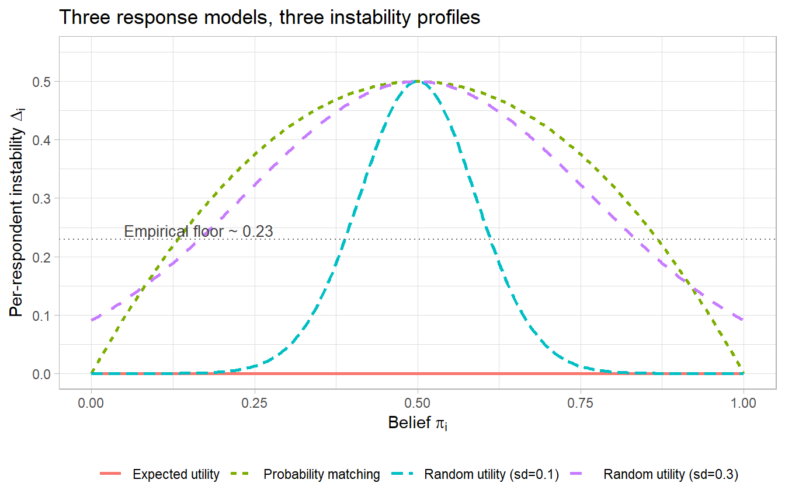
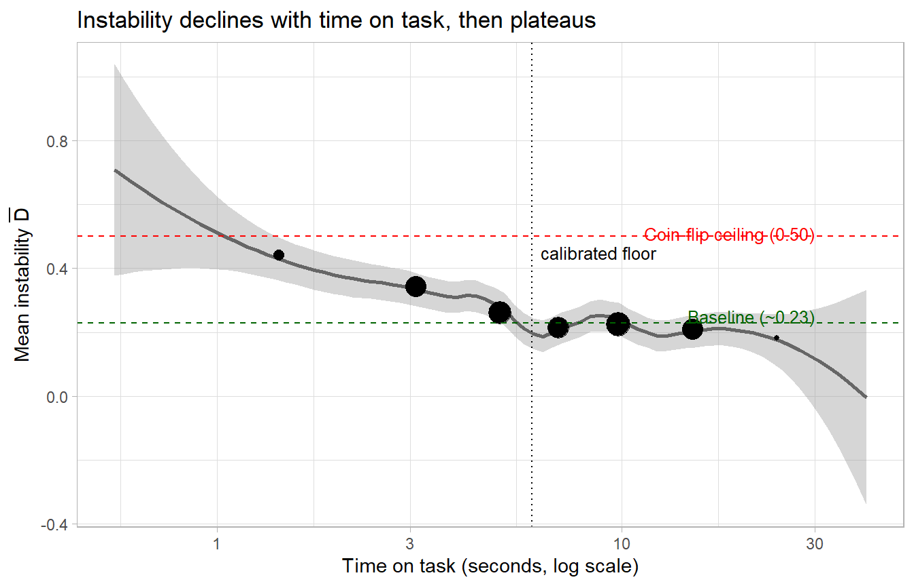
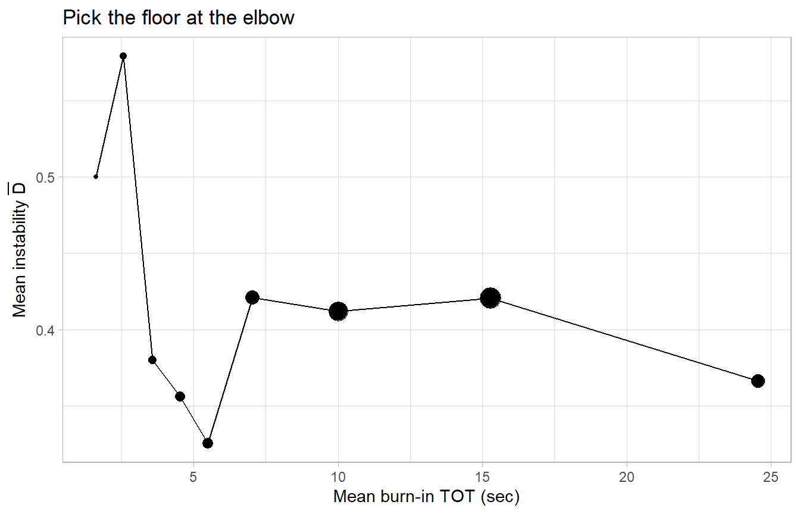
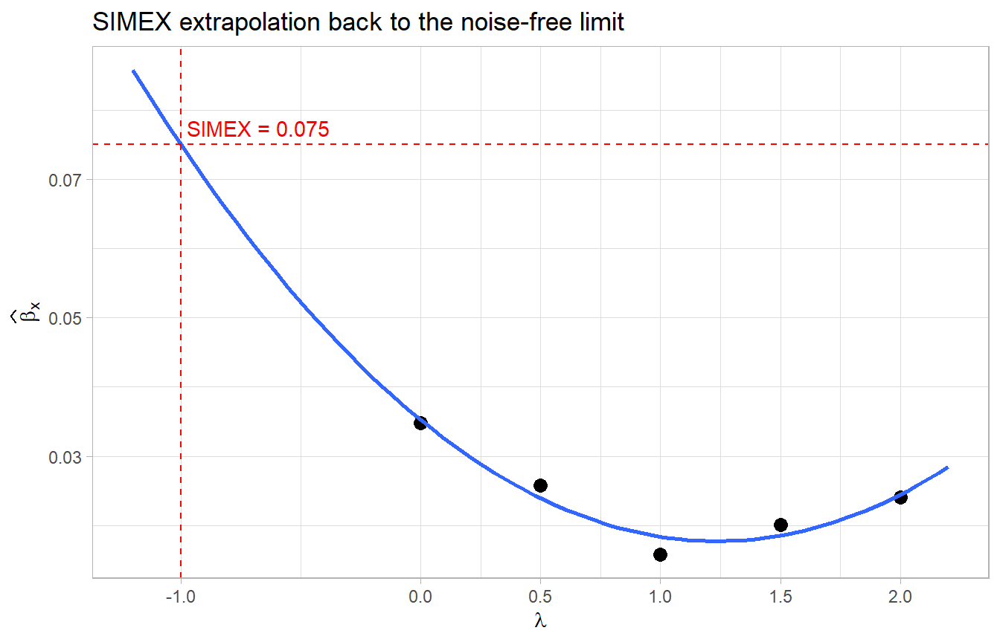
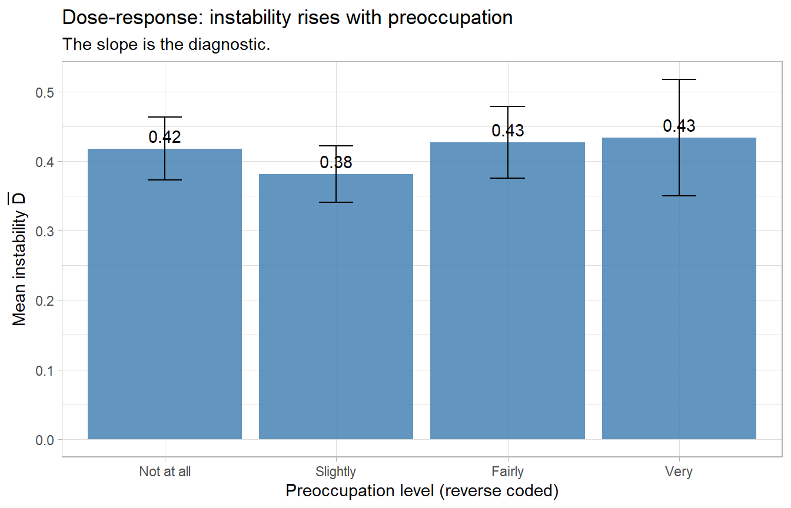

32 Survey and Response Quality
Survey research generates a substantial fraction of the empirical record in the social, marketing, and health sciences. The credibility of that record rests on a chain of assumptions about what survey responses are: that the instrument measures what it is supposed to measure (validity); that repeated measurement returns the same answer (reliability); that respondents read, understand, and answer items the way the analyst intends (cognitive fidelity); that the realised sample is informative about the target population (representativeness); and that the response process is not contaminated by social-desirability, mode, interviewer, fatigue, or other systematic distortions. Each link in the chain is fragile in characteristic ways, and survey methodology as a discipline has spent six decades cataloguing and partially mitigating those fragilities.
This chapter is a synthesis of that body of work, with two unifying themes. The first is a taxonomy of the threats to survey-and-response quality, organised by where in the cognitive-and-mechanical pipeline they enter. The second is a response-side variance decomposition that goes one step beyond the classical reliability framework: a non-trivial share of the variance routinely labelled “measurement error” is not error in the conventional sense; it is intrinsic stochasticity in the response process itself, the same kind of irreducible noise that biology, neuroimaging, and physics have long acknowledged in their measurement models. Acknowledging this changes how we measure reliability, how we filter respondents, how we model decision making, and how we report results.
We treat both themes seriously. The chapter is not exclusively about intrinsic stochasticity, nor is it a generic survey-methodology textbook. It is a working manual for the analyst who must design, administer, and analyse a survey instrument with full awareness of where the threats to its credibility live and what the modern toolkit can do about each.
The treatment here builds on six bodies of literature. (1) Validity theory, beginning with Cronbach and Meehl (1955)’s construct-validity framework and Campbell and Fiske (1959)’s multitrait-multimethod matrix, which together define what it means for an instrument to measure what it claims to measure. (2) Cognitive psychology of survey response (Tourangeau et al. 2000; Schwarz 1999; Krosnick 1991, 1999; Schaeffer and Dykema 2020), which decomposes the response process into a sequence of cognitive operations and identifies error sources at each stage. (3) Classical psychometric reliability theory (Lord and Novick 1968; Cronbach 1951; Heise 1969; Wiley and Wiley 1970; Alwin 2007), which provides the test-retest, internal-consistency, and quasi-Markov simplex tools that have served the field for half a century. (4) Response-style and satisficing literature (Krosnick 1991; Greenleaf 1992; Baumgartner and Steenkamp 2001; Van Vaerenbergh and Thomas 2013; Zhang and Conrad 2014; Krosnick et al. 2002), which catalogs systematic non-substantive response patterns (acquiescence, extremity, midpoint, straightlining, speeding, no-opinion gaming) and the design choices that mitigate each. (5) The modern survey-methodology synthesis embodied in the Total Survey Error framework and adjacent practitioner references (Groves et al. 2009; Saris and Gallhofer 2014; Beatty and Willis 2007; Willis 2005; Schaeffer et al. 2010; Heerwegh 2009; Holbrook et al. 2003; Stantcheva 2023). (6) The decision-theoretic and behavioural-economic literature on probability matching (Vulkan 2000; Erev and Roth 1998; Lo et al. 2021; Kahneman and Tversky 1979), which provides a mechanistic explanation for the residual instability that the classical psychometric framework attributes to error. Recent work in survey methodology connects these threads and quantifies response instability under tight identifying assumptions (Clayton et al. 2025; Jenke and King 2026); the careless-responding literature (Meade and Craig 2012; Curran 2016; Oppenheimer et al. 2009; Berinsky et al. 2014; Hauser and Schwarz 2016; Aronow et al. 2019; Chandler et al. 2014) then converts the framework into practical filter design.
Roadmap. Section 32.1 introduces the four-stage cognitive model of how respondents answer a survey question and identifies where error and noise enter at each stage. Section 32.2 reviews the Total Survey Error framework and locates the contribution of this chapter within it. Section 32.3 treats validity as a separate concern from reliability: construct, convergent, discriminant, and predictive validity, with the Campbell and Fiske (1959) multitrait-multimethod matrix as the central operationalisation. Section 32.4 gives the modern taxonomy of response styles (acquiescence, extreme, midpoint, straightlining, speeding, no-opinion gaming, random responding) drawing on Krosnick (1991), Greenleaf (1992), Baumgartner and Steenkamp (2001), Van Vaerenbergh and Thomas (2013), Zhang and Conrad (2014), and Krosnick et al. (2002). Section 32.5 covers mode effects, interviewer effects, and cognitive interviewing as the standard pretest (Holbrook et al. 2003; Heerwegh 2009; Schaeffer et al. 2010; Schaeffer and Dykema 2020; Beatty and Willis 2007; Willis 2005). Section 32.6 defines instability formally and gives the estimator. Section 32.7 reviews classical reliability theory (Cronbach’s \(\alpha\), ICC, the Heise–Wiley simplex) and shows where it is silent on intrinsic stochasticity. Section 32.8 develops the three-way variance decomposition. Section 32.9 gives the decision-theoretic foundations. Sections 32.10–32.12 discuss what modulates stochasticity and how to filter it. Section 32.13 gives design recommendations; Section 32.14 gives analysis recommendations including a closed-form attenuation correction, a SIMEX procedure, and the modern conjoint audit (pAMCE, AMIE, satisficing, \(\bar D\) correction; Hainmueller et al. (2014), Egami and Imai (2019), Cuesta et al. (2022), Bansak et al. (2018), Clayton et al. (2025)). Section 32.15 gives a complete R workflow including production-ready straightlining, speeding, long-string, and Mahalanobis-based careless-responding detection. Sections 32.16–32.18 treat three advanced design and analysis topics that complement the within-session replication framework: anchoring vignettes for cross-cultural comparability (King et al. 2004; King and Wand 2007), sensitive-question methodology including randomised response, list experiments, and the Rosenfeld et al. (2016) empirical-validation benchmark (Warner 1965; Blair and Imai 2012; Bullock et al. 2011; Glynn 2013), and multilevel regression and poststratification (MRP) with deep interactions and dynamic IRT extensions (Park et al. 2004; Wang et al. 2015; Ghitza and Gelman 2013; Caughey and Warshaw 2015; Lax and Phillips 2009). Section 32.20 covers online-panel quality, non-naïveté, professional respondents, duplicate accounts, and bot detection (Chandler et al. 2014; Berinsky et al. 2012). Section 32.21 addresses synthetic respondents and large language models (Argyle et al. 2023; Bisbee et al. 2024). Section 32.19 covers the modern robustness, replicability, and fraud-detection toolkit (Simmons et al. 2011; Simonsohn, Leif D. Nelson, et al. 2014a; Simonsohn 2013; Simonsohn et al. 2020; Ioannidis 2005; Open Science Collaboration 2015; Camerer et al. 2018). The chapter closes with a short note on causal inference, a summary, a further-reading list, and exercises. For the broadest modern guide to designing original surveys, Stantcheva (2023) is the single best entry point.
32.1 The cognitive process of answering a survey question
The most influential synthesis of how respondents construct an answer to a survey question is the four-stage model of Tourangeau et al. (2000). The model decomposes the response process into
- Comprehension of the question.
- Retrieval of relevant information from memory.
- Judgment integrating retrieved information into a tentative answer.
- Response selection, mapping the judgment onto the available response options.
Each stage admits its own error sources. Figure 32.1 renders the four-stage pipeline as a flow diagram with the dominant error mechanism branching off each stage, and Table 32.1 gives the same content in tabular form for reference.
Figure 32.1: The four-stage cognitive model of survey response (Tourangeau, Rips and Rasinski 2000) as a flow diagram. The respondent’s answer flows through four sequential cognitive stages; the dominant error mechanism at each stage is shown as a branch.
| Stage | Cognitive operation | Dominant error mechanism |
|---|---|---|
| 1. Comprehension | Parse syntax; assign reference; infer pragmatic meaning | Question wording; vague terms; double-barrelled items |
| 2. Retrieval | Search memory for relevant beliefs, episodes, attitudes | Recall failure; availability; omission of relevant evidence |
| 3. Judgment | Integrate retrieved evidence into a tentative answer | Anchoring; framing; satisficing; mood-as-information |
| 4. Response selection | Map the answer onto the response options | Acquiescence; central tendency; extreme responding; scale interpretation |
Several points follow from Table 32.1 that recur throughout the chapter.
First, most instrument-side measurement-error work targets stages 1 and 4: clearer wording reduces comprehension error, better-calibrated response options reduce mapping error. The interior stages 2 and 3 are far less under instrument control.
Second, the optimizing–satisficing tradeoff (Krosnick 1991, 1999) sits at stage 3. A respondent has a finite cognitive budget; when the cost of fully retrieving and integrating evidence exceeds the perceived benefit, the respondent satisfices, generating an answer that is plausible but not optimal. Satisficing is the cognitive mechanism through which item complexity and respondent fatigue inflate response noise, and it is the mechanism we will repeatedly point to when explaining why intrinsic stochasticity has the empirical signature it does.
Third, probability matching at stage 4 (Section 32.9) is conceptually distinct from satisficing at stage 3 even though they are easy to confuse. Satisficing reflects effort allocation; probability matching reflects how an internal probabilistic judgment is converted into a choice. Both inflate \(\bar D\), but they imply different design responses.
The four-stage model is also the right place to locate the classical question-wording literature. Schwarz (1999) synthesises three decades of experimental evidence that subtle features of the stimulus (the verbal labels on a scale, the numeric range, the order of options, the prior questions) systematically shift the answer obtained. Two stylized findings illustrate the family. When respondents are asked how often they are “really irritated” with response options ranging from “less than once a year” to “more than once a month”, they report being irritated infrequently; when given options ranging from “less than once a day” to “several times a month”, they report being irritated more frequently. When response options for daily television viewing are centred on a middle option of two hours, respondents anchor low; when centred on four hours, they anchor high. These are not idiosyncratic anomalies; they are systematic effects of the response-option set acting on stages 1 and 4. The most extensive catalog of such effects in survey methodology remains Schuman and Presser (1981).
32.2 The Total Survey Error framework
The standard graduate-level synthesis of where error enters survey estimates is the Total Survey Error (TSE) framework of Groves et al. (2009). TSE partitions estimate error into the components in Table 32.2. The framework is the lingua franca for survey-methodology audits; locating this chapter’s contribution within it sharpens what is being claimed.
| Component | Source | Reducible by |
|---|---|---|
| Coverage error | Mismatch between the target population and the sampling frame | Better frame; multi-frame designs |
| Sampling error | Variation across samples of the same size from the same frame | Larger \(n\); design-based variance reduction (Chapter on Sampling) |
| Nonresponse error | Differences between respondents and non-respondents in the realised sample | Targeted follow-up; weighting adjustments |
| Measurement error (instrument) | Question wording, mode, interviewer, layout | Cognitive pretesting; mode harmonisation; question redesign |
| Measurement error (respondent) | Comprehension, retrieval, judgment, response selection | Better stage-1 and stage-4 design; but not stage-2/3 noise |
| Processing error | Coding, editing, weighting, imputation | Process audits; double coding |
Figure 32.2 renders the framework as a taxonomy tree, highlighting the respondent-side measurement-error branch where the contribution of this chapter is concentrated.
Figure 32.2: The Total Survey Error framework as a taxonomy tree. The respondent-side measurement-error branch (highlighted) is the focus of this chapter; the remaining branches are addressed in the chapters on Sampling, Imputation, Biases, and elsewhere.
The contribution of this chapter sits in the respondent-side branch of Figure 32.2 and Table 32.2: the share of measurement error attributable to the respondent’s own response-generation process. The argument is that this row is conventionally treated as a residual that better instrument design will eventually shrink, when in fact a substantial part of it has the structural properties of intrinsic stochasticity and cannot be designed away.
32.3 Validity: are we measuring what we think we are measuring?
Reliability and validity are conceptually distinct: a perfectly reliable instrument can measure the wrong thing, and a valid instrument can be noisy. Most of this chapter is about reliability and noise; this short section establishes the validity framework that the rest of the chapter assumes.
Cronbach and Meehl (1955) introduce the modern concept of construct validity as the central question of measurement: does the instrument measure the latent construct it claims to measure? They distinguish four types of validity, three of which remain core to the modern toolkit (Table 32.4).
| Type | Question | Standard test |
|---|---|---|
| Content validity | Do the items cover the full conceptual domain of the construct? | Expert review against a domain map |
| Criterion validity (concurrent) | Does the instrument correlate with a contemporaneous gold-standard measure? | Pearson/polychoric correlation with the criterion |
| Criterion validity (predictive) | Does the instrument predict a future outcome of theoretical interest? | Out-of-sample predictive performance |
| Construct validity; convergent | Do measures of the same construct correlate strongly? | Off-diagonal validity correlations in the MTMM matrix |
| Construct validity; discriminant | Do measures of distinct constructs correlate weakly? | Heterotrait correlations smaller than monotrait |
| Face validity | Does the instrument look sensible to respondents and reviewers? | Cognitive interviewing and pretest review |
| Known-groups validity | Does the instrument differ between groups known to differ on the construct? | Two-sample \(t\)-test or known-group SEM |
In the marketing-research tradition, the standard structural-equation operationalisation of construct validity is Bagozzi and Yi (1988), who codified a now-canonical checklist for SEM-based measurement-model evaluation: composite reliability, average variance extracted (AVE), \(\chi^2\) and incremental fit indices, and discriminant-validity tests via \(\sqrt{\mathrm{AVE}}\) versus inter-construct correlations. For a Springer marketing audience, Bagozzi and Yi is the entry point; the broader SEM machinery is covered in the chapter on Structural Equation Modeling.
The single most influential operationalisation of construct validity is the multitrait-multimethod (MTMM) matrix of Campbell and Fiske (1959). The MTMM matrix is the correlation matrix of \(T \times M\) measurements (each of \(T\) traits administered through each of \(M\) methods). Convergent validity is read off the monotrait-heteromethod diagonal: measures of the same trait through different methods should correlate strongly. Discriminant validity is read off the heterotrait-heteromethod off-diagonal: measures of different traits through different methods should correlate weakly. A trait that fails convergent validity is not measured by the instrument; a trait that fails discriminant validity is not distinguishable from neighbouring constructs. Saris and Gallhofer (2014) develops the modern structural-equation operationalisation of MTMM, including the MTMM-MTSM extension that simultaneously estimates trait, method, and unique variance.
A practical hierarchy for the analyst designing a new survey instrument is:
- Map the construct domain. Write down what the construct is and is not. Validate the domain map against an expert panel (content validity).
- Cognitively pretest the items against members of the target population (face validity, comprehension).
- Pilot the instrument alongside a gold-standard alternative if available (criterion validity).
- For multi-construct instruments, run an MTMM design if the budget allows (convergent and discriminant validity).
- Field the instrument and measure reliability (the rest of this chapter).
Order matters. Validity precedes reliability. A reliable measurement of the wrong construct is worse than no measurement at all, because it gives the analyst false confidence. The remainder of this chapter assumes the validity work has been done.
32.3.1 Measurement invariance
For comparisons across groups, time, or modes, validity requires more than within-group construct validity: the latent factor structure must hold equivalently across the comparison units. Vandenberg and Lance (2000) codify the measurement invariance hierarchy as a series of nested confirmatory-factor-analysis restrictions on (a) configural invariance (same factor structure), (b) metric invariance (equal factor loadings), (c) scalar invariance (equal item intercepts), and (d) strict invariance (equal item residual variances). Cross-group comparisons of latent means require at least metric and scalar invariance; comparisons of regression coefficients on the latent factor require at least metric invariance. The lavaan and semTools R packages implement the standard tests.
For survey research with cross-cultural or cross-mode comparisons, measurement invariance is the SEM-side counterpart of the anchoring-vignettes apparatus in Section 32.16: both diagnose differential item functioning, but invariance testing relies on parametric structural-equation assumptions whereas anchoring vignettes use a non-parametric calibration design.
32.3.2 Where the validity apparatus meets the rest of the chapter
The psychometric reliability apparatus described in Section 32.7 measures how consistently the instrument fires under repeated administration; the response-quality apparatus described in Sections 32.4–32.5 measures whether respondents are doing their part of the job seriously; and the intrinsic-stochasticity framework developed in Sections 32.6–32.9 addresses the irreducible component of within-respondent noise that survives the first two diagnostics.
32.4 Response styles, satisficing, and non-substantive responding
Even with a valid instrument and an attentive respondent, a substantial share of recorded variance reflects systematic non-substantive responding; patterns driven by the response process rather than the substantive content. The classical taxonomy (Krosnick 1991; Baumgartner and Steenkamp 2001; Van Vaerenbergh and Thomas 2013) distinguishes the patterns in Table 32.6.
| Style | Definition | Detection (single item) | Mitigating design |
|---|---|---|---|
| Acquiescence (ARS) | Tendency to agree regardless of content | Item-pair (positive vs. negated) agreement | Reverse-coded items; balanced scales |
| Disacquiescence (DARS) | Tendency to disagree regardless of content | Item-pair (positive vs. negated) disagreement | Reverse-coded items; balanced scales |
| Extreme response style (ERS) | Tendency to choose scale endpoints | Greenleaf (1992) ERS scale | Avoid 7+ point unanchored scales |
| Midpoint / central tendency (MRS) | Tendency to choose the scale midpoint | Frequency of midpoint responses | Even number of options forces non-midpoint |
| Net acquiescence (NARS) | ARS minus DARS in proportional terms | Composite of ARS and DARS | Balanced scales with reverse coding |
| Noncontingent / random responding | Random responses unrelated to item content | Mahalanobis distance; consistency indices | Cognitive pretest; remove items respondents cannot interpret |
| Straightlining | Same response across multiple grid items | Within-row variance in matrix questions | Vary item order; avoid long matrix grids |
| Speeding | Time on task below a content-comprehension floor | Within-respondent percentile of TOT | Burn-in TOT floor (Section 32.12) |
32.4.1 The optimizing–satisficing tradeoff
The mechanism unifying most of Table 32.6 is Krosnick (1991)’s satisficing model: the respondent allocates cognitive effort across stages of the four-stage cognitive model (Section 32.1) until perceived marginal benefit equals perceived marginal cost, then short-cuts the remaining stages. Strong satisficing truncates the response process at the comprehension stage and substitutes a heuristic answer (acquiescence, midpoint selection, straightlining); weak satisficing truncates the retrieval/judgment stages and substitutes a partial-evidence answer.
The key empirical regularity is that satisficing rises with item complexity, declines with respondent ability and motivation, and inflates as the survey gets longer. The implication is that the first third of a long instrument typically yields cleaner measurement than the last third, even on the same items.
32.4.2 Acquiescence, extremity, and midpoint
Baumgartner and Steenkamp (2001) provides the modern marketing-research operationalisation of the response-style taxonomy. Using consumer surveys from 11 EU countries, they document that:
- ARS, DARS, ERS, and MRS are systematic (within-respondent stable) and correlated (a respondent high on ARS is also typically high on ERS), implying a low-dimensional latent structure rather than independent quirks.
- Response styles bias scale scores by an amount that depends on (i) the proportion of reverse-coded items and (ii) the deviation of the scale mean from the response-scale midpoint.
- Cross-country comparisons of substantive scale scores can be substantially biased when response-style prevalence differs across cultures, even when the underlying construct does not.
The remedies follow naturally: include reverse-coded items to balance acquiescence-induced bias, use scales with even numbers of options to suppress midpoint choosing, and either (a) measure response styles via an auxiliary battery (Greenleaf 1992) and partial-out their variance, or (b) use IRT-based extreme-response-style estimation that recovers latent ERS as a second factor alongside the substantive trait.
32.4.3 Straightlining and speeding
In matrix-grid questions and long batteries of similar items, two of the most consequential patterns are straightlining (selecting the same response across all rows of a grid) and speeding (responding much faster than reasonable comprehension allows). Zhang and Conrad (2014) establish that the two are tightly coupled: respondents who speed on early items are dramatically more likely to straightline on later grid questions, and the speed-straightline coupling is strongest for less-educated respondents and for younger respondents.
Detection follows from two simple operationalisations. First, long-string \(L_i = \max_j \mathbb{1}\{X_{i,j} = X_{i,j-1}\}\) counts the longest consecutive identical response sequence within respondent \(i\); values above a sample-specific cutoff (typically the 95th percentile, or any value above \(0.7 \times K\) for a \(K\)-row grid) flag straightlining. Second, page-level speeding \(\mathrm{Speed}_i^{(p)} = \mathrm{TOT}_i^{(p)} / \overline{\mathrm{TOT}^{(p)}}\) flags respondents below \(0.5\) of the page-level median time. Section 32.15 provides production-ready code.
32.4.4 Don’t-know responses and item nonresponse
A separate component of non-substantive responding is the use of “don’t know” (DK) or “no opinion” response options when offered. Krosnick et al. (2002) provides the canonical empirical evaluation: contrary to the seasoned-survey-researcher intuition that offering DK reduces guessing by respondents who hold no true opinion, the data show that DK is preferentially selected by respondents low in cognitive skills, by respondents answering secretly rather than orally, and by respondents late in long surveys: the satisficing signature. Including DK options can therefore reduce the total information content of the instrument by inviting low-effort opt-out.
The recommendation that follows is design-conditional. Where the analyst has reason to believe a meaningful share of the population holds genuinely no opinion (low-salience policy items, novel constructs), offer DK and treat it as substantive. Where the analyst has reason to believe most of the population holds an opinion of some kind (well-known issues, well-anchored attitudes), omit DK and accept some forced-choice noise as the price of fewer satisficed responses.
32.4.5 Pure non-contingent responding
Beyond the structured patterns above, a small fraction of respondents simply respond at random. Mahalanobis distance \(D_i^2 = (\mathbf{x}_i - \bar{\mathbf{x}})^\top \mathbf{S}^{-1} (\mathbf{x}_i - \bar{\mathbf{x}})\) on the response vector flags multivariate outliers; person-total correlation \(r_i = \mathrm{cor}(\mathbf{x}_i, \bar{\mathbf{x}}_{-i})\) flags respondents whose answer pattern is uncorrelated with the sample-mean answer pattern. Meade and Craig (2012) recommend computing both alongside long-string and TOT diagnostics and using the joint distribution rather than any single index. Section 32.11.2 implements the joint detection battery.
32.5 Mode, interviewer, and pretesting effects
Survey mode and interviewer characteristics are not innocuous design choices. A mode change can shift the recorded response distribution by amounts comparable to substantive treatment effects in the same instrument; an interviewer-induced effect on a single sensitive item can dwarf the standard error of the population estimate.
32.5.1 Mode effects
Three large empirical literatures document mode effects. Holbrook et al. (2003) compare telephone with face-to-face interviewing on national probability samples with long questionnaires; telephone respondents satisfice more (more midpoint, more no-opinion, more straightlining) and exhibit larger social-desirability bias on sensitive items than face-to-face respondents in the same survey design. Heerwegh (2009) compares face-to-face and web administration of the same instrument with random assignment of mode within a single sample; the web condition reduces social-desirability bias on sensitive items at the cost of higher item nonresponse and shorter open-ended responses. The umbrella synthesis in Schaeffer and Dykema (2020) catalogues additional mode effects on response distribution shape, breakoff rates, and cognitive load.
The implication for analysis is direct: calibrate filter floors mode-by-mode, never pool. A TOT floor of 6 seconds that is sensible for a face-to-face conjoint item is too lax for the same item self-administered online and too strict for the same item asked over the phone with an interviewer reading the prompt aloud.
32.5.2 Interviewer effects
Where interviewers are present, an additional layer of design effect enters: interviewers vary in how they read prompts, probe responses, and code answers. Schaeffer et al. (2010) and Schaeffer and Dykema (2020) synthesise the standardised-interviewing literature. Two practical implications.
- Interviewer ID should be a level in any multilevel model of the survey response. Variance attributable to interviewers is rarely small; treating it as zero biases standard errors downward and inflates Type I error.
- Interviewer variance is a quality diagnostic. Large interviewer variance on a question that should admit a single objective answer (e.g., a factual recall item) suggests interviewer-introduced measurement error and motivates either re-training, item redesign, or both.
32.5.3 Cognitive interviewing as the standard pretest
Beatty and Willis (2007) synthesise the now-standard cognitive-interviewing protocol for pretesting survey items. The respondent is administered the draft item alongside a verbal protocol (think-aloud, scripted probes, retrospective debriefing) that surfaces comprehension, retrieval, and judgment problems. Willis (2005) develops the practitioner’s manual.
A workable cognitive-interview protocol for a new instrument is:
- Draft the items.
- Recruit 8–15 respondents broadly representative of the target population.
- Administer each draft item with a think-aloud or concurrent-probe verbal protocol.
- Code observed problems by stage of the four-stage model (comprehension, retrieval, judgment, response selection).
- Revise items where the same problem recurs in three or more interviews.
- Iterate.
Cognitive interviewing is a complement to, not a substitute for, larger-scale field pretesting. Behaviour coding (recording the frequency of interviewer probes, respondent requests for clarification, and breakoffs) on a field pretest catches design problems that cognitive interviewing misses, particularly in interviewer-administered modes (Schaeffer et al. 2010).
32.6 Defining survey instability
32.6.1 Setup and notation
Consider a finite population of \(N\) respondents and a binary survey item. Let \(C_{it} \in \{0, 1\}\) denote respondent \(i\)’s observed choice at administration \(t \in \{1, 2\}\), where the two administrations are separated by some elapsed time and possibly by intervening items. Define individual-level survey instability as the indicator
\[\begin{equation} D_i \;=\; \mathbb{1}\!\left( C_{i1} \neq C_{i2} \right), \tag{32.1} \end{equation}\]
and population mean instability is the average of \(D_i\) from equation (32.1) across the population,
\[\begin{equation} \Delta \;=\; \frac{1}{N} \sum_{i=1}^{N} D_i. \tag{32.2} \end{equation}\]
The complement \(1 - \Delta\) in equation (32.2) is sometimes called intra-respondent reliability on a binary item. It is conceptually distinct from inter-rater reliability (agreement across raters on the same target), internal consistency (Cronbach’s \(\alpha\), agreement across items in a scale; Section 32.7), and unidimensionality (whether the items load on a single latent factor). Intra-respondent reliability is the within-respondent within-item analogue.
For a sample of \(n < N\) respondents drawn under a sampling design with inclusion indicator \(S_i \in \{0,1\}\) and inclusion probability \(\pi_i^{\mathrm{(samp)}}\), the design-unbiased Horvitz–Thompson estimator of \(\Delta\) is
\[\begin{equation} \widehat{\Delta} \;=\; \frac{1}{N}\sum_{i=1}^{N} \frac{S_i\, D_i}{\pi_i^{\mathrm{(samp)}}}. \tag{32.3} \end{equation}\]
Under simple random sampling without replacement and ignorable nonresponse, equation (32.3) collapses to the sample mean \(\bar D = n^{-1} \sum_{i:S_i=1} D_i\). We use \(\bar D\) in the rest of the chapter; design-based corrections required when the sampling design departs from simple random are covered in the chapter on Sampling.
32.6.2 Identifying assumptions
For \(\bar D\) to estimate something we are willing to call instability rather than something else that happens to be a difference rate, three assumptions must hold.
Assumption 1 (No material change). Between the two administrations, no information has reached respondent \(i\) that would change the meaning of the question or the value of the response options. Formally, the respondent’s information set \(\mathcal{F}_i\) relevant to the item is the same at both administrations.
Assumption 2 (No memory). At administration \(t = 2\), respondent \(i\) has no recollection of having been asked the item at \(t = 1\). Were memory present, \(C_{i2}\) would be a function of \(C_{i1}\) rather than an independent draw from the response process.
Assumption 3 (Attrition at random). Whether respondent \(i\) is observed at both administrations is independent of \(D_i\), possibly conditional on observed covariates.
These three assumptions interact in ways that traditional panel surveys cannot satisfy simultaneously (Table 32.8).
| Design | A1 (no change) | A2 (no memory) | A3 (attrition at random) |
|---|---|---|---|
| Wide-spaced panel waves | Hard; world changes between waves | Easy; long interval | Hard; selective attrition |
| Narrow-spaced panel waves | Easier; short interval | Hard; recent question recalled | Easier; short interval |
| Within-session replication | Trivially holds (single session) | Holds with sufficient distractor items (Clayton et al. 2025) | Trivially holds (no inter-session attrition) |
The methodological move that allows clean estimation of \(\Delta\) is, accordingly, to ask the same item twice within a single survey session, separated by distractor items. Within-session replication satisfies Assumption 1 by construction, satisfies Assumption 3 because attrition is essentially absent within a session, and satisfies Assumption 2 if the distractor block is sufficient; in the Clayton et al. (2025) design, with three or more well-chosen distractors, respondents virtually never report having noticed the repeat, so Assumption 2 holds empirically. Under all three assumptions, \(\Delta \in [0, 1]\) in principle, but the practical maximum is \(0.5\); the value implied by independent Bernoulli draws.
32.6.3 Why \(\bar D\) is preferred to test–retest correlation
For binary items, \(\bar D\) contains strictly more information for analytic purposes than the test–retest correlation, for three reasons.
First, \(\bar D\) is on the same scale as the outcome (probability of disagreement), whereas correlation is unitless and harder to translate into substantive terms.
Second, \(\bar D\) has a direct decision-theoretic interpretation: it tells you the probability that an arbitrarily selected respondent’s recorded answer would differ if you collected the data again moments later. No correlation coefficient gives you that quantity directly.
Third, \(\bar D\) does not depend on the marginal distribution of the outcome, while correlation does. The classical relationship is
\[\begin{equation} r_{tt} \;=\; 1 - \frac{\bar D}{2 p (1-p)}, \tag{32.4} \end{equation}\]
where \(p = \Pr(C = 1)\). Equation (32.4) makes the marginal dependence explicit: holding \(\bar D\) fixed, \(r_{tt}\) shrinks toward zero as \(p\) approaches \(\tfrac{1}{2}\). This is the binary-item version of the classical fact that polychoric and Pearson correlations on dichotomised data depend on marginals; Achen (1975) gives the canonical political-behaviour treatment, and the broader psychometric literature (Alwin 2007) confirms the same pattern for ordinal items.
Table 32.9 makes the dependence concrete: for a fixed \(\bar D = 0.20\), the implied \(r_{tt}\) varies from 0.60 at \(p = 0.5\) down to 0.38 at \(p = 0.2\). A reader who reads only \(r_{tt}\) would draw very different conclusions about the same underlying response process depending on the marginal.
| D-bar | p = Pr(C=1) | r_tt |
|---|---|---|
| 0.1 | 0.5 | 0.800 |
| 0.1 | 0.3 | 0.762 |
| 0.1 | 0.2 | 0.688 |
| 0.2 | 0.5 | 0.600 |
| 0.2 | 0.3 | 0.524 |
| 0.2 | 0.2 | 0.375 |
| 0.3 | 0.5 | 0.400 |
| 0.3 | 0.3 | 0.286 |
| 0.3 | 0.2 | 0.062 |
We therefore recommend reporting \(\bar D\) as the primary reliability statistic for binary survey items, with the test–retest correlation reported alongside only if comparison to historical literature requires it.
32.6.4 Sampling distribution of \(\bar D\)
Because \(D_i \in \{0,1\}\) and is sampled independently across respondents under simple random sampling, \(\bar D\) is the sample mean of independent Bernoulli\((\Delta)\) random variables with population variance \(\Delta(1-\Delta)\). The standard error is
\[\begin{equation} \mathrm{SE}(\bar D) \;=\; \sqrt{\frac{\Delta(1-\Delta)}{n}} \;\approx\; \sqrt{\frac{\bar D(1-\bar D)}{n}}. \tag{32.5} \end{equation}\]
A two-sided \(1 - \alpha\) Wald interval from equation (32.5) is \(\bar D \pm z_{1-\alpha/2}\,\mathrm{SE}(\bar D)\). For small samples or for \(\bar D\) near 0 or 0.5, the Clopper–Pearson exact interval or a Wilson score interval should be preferred to Wald. We illustrate both in Section 32.15.
For non-binary items, the natural generalisation of \(\bar D\) is the within-respondent mean absolute discrepancy or, for ordinal items, the within-respondent Spearman rank correlation across replications. The mathematical apparatus changes; the conceptual point, use a within-session replicated DV to identify intrinsic stochasticity, does not.
32.7 Classical reliability theory and where it stops
Before we develop the three-way variance decomposition we need to be precise about what classical psychometrics already provides. The argument of this chapter is not that classical reliability theory is wrong; it is that it is silent on a specific component of the noise. Knowing exactly what classical theory does identify is a precondition for seeing what it does not.
32.7.1 The classical decomposition
The foundational reference is Lord and Novick (1968). An observed score \(X\) is decomposed into a true score \(T\) and an error term \(E\),
\[\begin{equation} X \;=\; T + E,\qquad \mathrm{Var}(X) \;=\; \mathrm{Var}(T) + \mathrm{Var}(E), \tag{32.6} \end{equation}\]
with \(\mathrm{Cov}(T, E) = 0\) by construction. The reliability of the measurement is
\[\begin{equation} \rho \;=\; \frac{\mathrm{Var}(T)}{\mathrm{Var}(T) + \mathrm{Var}(E)} \;=\; 1 - \frac{\mathrm{Var}(E)}{\mathrm{Var}(X)}, \tag{32.7} \end{equation}\]
a number in \([0, 1]\). The standard estimators of \(\rho\) in equation (32.7) depend on the nature of the data.
32.7.2 Cronbach’s \(\alpha\) for multi-item scales
When the measurement is a \(k\)-item scale, the standard internal-consistency estimator is Cronbach (1951)’s \(\alpha\),
\[\begin{equation} \alpha \;=\; \frac{k}{k - 1} \left( 1 - \frac{\sum_{j=1}^{k} \mathrm{Var}(X_j)}{\mathrm{Var}\!\left(\sum_{j=1}^{k} X_j\right)} \right), \tag{32.8} \end{equation}\]
Equation (32.8) is a lower bound on \(\rho\) under the assumption of \(\tau\)-equivalent items. Cronbach’s \(\alpha\) is silent on within-respondent within-item noise; it summarises across-item consistency. A scale with \(\alpha = 0.95\) can still produce \(\bar D = 0.25\) on each individual item.
32.7.3 Coefficient \(\omega\) as a superior alternative to \(\alpha\)
Cronbach’s \(\alpha\) is the field’s default reliability statistic, but psychometricians have argued for decades that it is a poor lower bound and a worse point estimate of true reliability whenever the \(\tau\)-equivalence assumption fails. The modern alternative is McDonald (1999)’s coefficient \(\omega\), derived from a factor-analytic representation of the scale. For a single-factor scale with loadings \(\lambda_j\) and item residual variances \(\psi_j^2\), the total-score reliability is
\[\begin{equation} \omega_t \;=\; \frac{(\sum_{j} \lambda_j)^2}{(\sum_{j} \lambda_j)^2 + \sum_{j} \psi_j^2}. \tag{32.9} \end{equation}\]
For congeneric scales, \(\omega_t \ge \alpha\) in equation (32.9), and equality holds only under \(\tau\)-equivalence (equal loadings). Revelle and Zinbarg (2009) argue that \(\alpha\) should be retired in favour of \(\omega_t\) for the total-score reliability and \(\omega_h\) for the proportion of variance attributable to a general factor; the psych package in R reports all three. For the reliability-reporting practitioner, the recommendation is to report \(\omega_t\) alongside \(\alpha\) until the field’s reporting conventions catch up.
32.7.4 Generalizability theory
Classical test theory partitions variance into a single true-score component and a single error component (equation (32.6)). Generalizability theory (Cronbach et al. 1972) generalises this partition to multiple identified facets of variance: items, raters, occasions, and any other source whose variance the analyst wants to identify separately. The framework yields generalizability coefficients \(E\rho^2\) tailored to specific decision contexts (absolute vs. relative interpretation) and allows the analyst to project how reliability would change under alternative measurement designs (more items, more raters, more occasions).
G-theory is the natural home of the three-way decomposition in equation (32.11): intrinsic stochasticity is a respondent-by-occasion variance component that G-theory makes first-class. The gtheory R package implements the standard variance-components estimation. We mention G-theory here as the right framework for the analyst who wants to push the variance decomposition further than this chapter does.
32.7.5 Test–retest correlation and the Heise–Wiley simplex
For longitudinal designs, the natural reliability estimator is the test–retest correlation \(r_{tt}\) defined in equation (32.4). The classical objection (Heise 1969; Wiley and Wiley 1970) is that for any non-zero interval between administrations, \(r_{tt}\) confounds unreliability (within-respondent measurement noise) with true change (within-respondent attitude shift).
Heise (1969) shows that with three administrations of the same item it is possible to separate reliability from stability using the moment conditions of an autoregressive measurement model. Let \(X_t\) denote the observed score at time \(t\), \(T_t\) the latent true score, and assume
\[\begin{align} X_t &= T_t + E_t, & E_t &\sim \mathcal{N}(0, \sigma_E^2),\ \mathrm{independent\ across}\ t, \\ T_t &= \beta_t T_{t-1} + U_t, & U_t &\sim \mathcal{N}(0, \sigma_U^2). \end{align}\]
The identification of the Heise estimators below requires the stationarity assumption that \(\mathrm{Var}(T_t)\) is time-invariant, so that reliability \(\rho = \mathrm{Var}(T_t)/\mathrm{Var}(X_t)\) is constant across waves; Wiley and Wiley (1970) relaxes this assumption at the cost of an additional wave and develops a maximum-likelihood version of the simplex that admits time-varying error variances. Under the stationarity assumption, with three waves, the three pairwise correlations \(r_{12}\), \(r_{23}\), \(r_{13}\) over-identify \((\rho, \beta_1, \beta_2)\), yielding the Heise estimators
\[\begin{equation} \hat\rho_2 \;=\; \frac{r_{12} \cdot r_{23}}{r_{13}},\qquad \hat\beta_1 \;=\; \frac{r_{13}}{r_{23}},\qquad \hat\beta_2 \;=\; \frac{r_{13}}{r_{12}}. \tag{32.10} \end{equation}\]
The Heise–Wiley simplex remains the classical workhorse for longitudinal reliability estimation in sociology and political science.
Why the simplex is silent on intrinsic stochasticity. The simplex identifies \(\rho\) and \(\beta_t\) from across-wave covariances that assume independent measurement error across waves. If part of the residual noise is, in fact, intrinsic stochasticity drawn afresh from a respondent-level distribution at each measurement, the simplex absorbs it into \(\sigma_E^2\) and labels it “measurement error”. The decomposition is internally consistent, but the substantive interpretation; “this is noise we could in principle eliminate with a better instrument”; is wrong.
32.7.6 Multi-trait multi-method reliability
Saris and Gallhofer (2014) gives the modern Wiley-style synthesis. The MTMM (multi-trait multi-method) design administers each of \(T\) traits through each of \(M\) methods, yielding \(TM\) measurements per respondent and identification of trait variance, method variance, and unique variance from a structural equation model. MTMM is the gold-standard reliability assessment in survey methodology, but it shares the simplex’s limitation: any noise drawn from a respondent-level stochastic process at each measurement is absorbed into the unique-variance term and is not separately identified.
The within-survey replicated DV protocol (Section 32.12) is, in this language, a single-trait single-method design with within-session replication; what it gives up in trait/method coverage it gains in the ability to isolate intrinsic stochasticity from instrument noise.
32.8 A three-way variance decomposition
The classical decomposition in equation (32.6) lumps everything that is not signal into a single residual. We argue it should be replaced with
\[\begin{equation} \mathrm{Var}(X) \;=\; \underbrace{\mathrm{Var}(T)}_{\text{signal}} \;+\; \underbrace{\mathrm{Var}(M)}_{\text{measurement error}} \;+\; \underbrace{\mathrm{Var}(S)}_{\text{intrinsic stochasticity}}, \tag{32.11} \end{equation}\]
In equation (32.11), \(T\), \(M\), and \(S\) are pairwise uncorrelated. The third term captures noise that is part of the respondent’s response-generation process rather than a defect of the instrument. The new reliability ratio is
\[\begin{equation} \rho^{\ast} \;=\; \frac{\mathrm{Var}(T)}{\mathrm{Var}(T) + \mathrm{Var}(M) + \mathrm{Var}(S)}, \tag{32.12} \end{equation}\]
The \(\rho^{\ast}\) defined in equation (32.12) satisfies \(\rho^{\ast} \le \rho\) in general. The classical \(\rho\) confuses \(\mathrm{Var}(M) + \mathrm{Var}(S)\) for a single residual; \(\rho^{\ast}\) separates them.
This is not a semantic distinction. It has direct empirical consequences (Table 32.10).
| Question | Two-way (Lord-Novick) | Three-way (this chapter) |
|---|---|---|
| Will instrument improvement reduce the residual? | Always yes (by definition) | Only \(\mathrm{Var}(M)\); \(\mathrm{Var}(S)\) irreducible |
| Is the residual identified by within-session replication? | Yes | \(\mathrm{Var}(M) + \mathrm{Var}(S)\) identified jointly |
| Is the residual identified by classical test–retest? | Yes (with caveats; see Heise simplex) | \(\mathrm{Var}(S)\) absorbed into the error term |
| Does the residual attenuate regression coefficients? | Yes, by attenuation factor | Yes for \(\mathrm{Var}(M)\); the \(\mathrm{Var}(S)\) part needs the correction in Section 32.14.3 |
| Does the residual cancel out in differences (DiD, RDD)? | Yes, on average | Yes for both, on average |
The three-way decomposition is not unique to survey research. Table 32.12 lists analogous decompositions in adjacent disciplines.
| Field | Instrument-side variance | Subject-side variance |
|---|---|---|
| Survey research (this chapter) | Measurement error (M) | Intrinsic stochasticity (S) |
| Gene-expression noise (Elowitz et al. 2002) | Extrinsic noise | Intrinsic gene-expression noise |
| fMRI / neuroimaging | Thermal / scanner noise | Physiological / spontaneous activity |
| Soft-matter / colloid physics | Diffraction / optical limits | Brownian motion |
| Classical test theory (Lord and Novick 1968) | Error of measurement | True-score variation |
The analogy with gene-expression noise is particularly tight. Elowitz et al. (2002) separated intrinsic and extrinsic contributions to noise in protein expression by simultaneously measuring two identical fluorescent reporters in the same cell; the within-cell discrepancy is intrinsic, the across-cell discrepancy after subtracting intrinsic noise is extrinsic. The within-survey replicated DV plays an exactly analogous role: it isolates the within-respondent noise component that no instrument-side fix can remove.
The implication for applied analysts is direct. When you observe a \(\bar D\) of, say, 0.20 in a binary outcome and you have already done the careful work of debiasing your instrument, do not conclude that you have failed. Conclude that you are approaching the irreducible floor for your population and item, and adjust your inference and your reporting accordingly.
32.9 Decision-theoretic foundations
The presence of intrinsic stochasticity raises a question that classical reliability theory does not answer: through what mechanism does noise enter the response? A complete answer requires a model of how respondents transform their (potentially uncertain) preferences into observed choices. We review three candidate models in order of increasing realism.
32.9.1 Expected utility (deterministic)
Let \(\theta_i \in \{0, 1\}\) denote respondent \(i\)’s true preference (we use \(\theta\) rather than \(\rho\) to avoid collision with the classical reliability ratio \(\rho\) of Section 32.7) and \(\pi_i \in [0,1]\) their belief that \(\theta_i = 1\). Under expected utility (with no idiosyncratic shocks), the respondent always picks the option more likely to be correct,
\[\begin{equation} C_{it} \;=\; \mathbb{1}\!\left( \pi_i > 0.5 \right). \tag{32.13} \end{equation}\]
Under (32.13), \(\pi_{i1} = \pi_{i2}\) implies \(C_{i1} = C_{i2}\) for every respondent, hence \(D_i = 0\) for every respondent who knows their own preference. This model predicts zero observed instability, which is empirically false at any reasonable sample size.
32.9.2 Random utility (stochastic input, deterministic decision rule)
The economics-flavoured fix, foundational in discrete-choice modelling, is to add a mean-zero shock just before the decision,
\[\begin{equation} C_{it} \;=\; \mathbb{1}\!\left( \pi_i + \eta_{it} > 0.5 \right),\qquad \eta_{it} \perp \!\!\! \perp \eta_{is}\ \text{for}\ t \neq s, \tag{32.14} \end{equation}\]
where \(\eta_{it}\) is drawn afresh on each administration. This is the foundation of all logit and probit discrete-choice models, including the Hainmueller et al. (2014) AMCE estimator. Under (32.14), instability is positive but vanishes as \(|\pi_i - 0.5|\) grows large or as \(\mathrm{Var}(\eta_{it})\) shrinks to zero. The per-respondent instability is
\[\begin{equation} \Delta_i^{\mathrm{RUM}} \;=\; 2\, p_i (1 - p_i),\qquad p_i \;=\; \Pr(\pi_i + \eta_{it} > 0.5), \tag{32.15} \end{equation}\]
Equation (32.15) is a strictly decreasing function of \(|\pi_i - 0.5|\) for any unimodal symmetric shock. RUM is consistent with Kahneman and Tversky (1979) prospect-theoretic deviations from expected utility insofar as the deviations enter as mean-zero shocks; it is not consistent with intrinsically stochastic choice.
32.9.3 Probability matching (irreducibly stochastic)
The psychology-flavoured alternative treats the choice itself as stochastic, even when beliefs are perfectly known:
\[\begin{equation} C_{it} \;\sim\; \mathrm{Bernoulli}(\pi_i),\qquad C_{i1} \perp \!\!\! \perp C_{i2}\mid \pi_i. \tag{32.16} \end{equation}\]
Under (32.16), even a respondent who is perfectly informed about \(\pi_i\) does not necessarily choose the higher-probability option. The expected per-respondent instability is
\[\begin{equation} \Delta_i^{\mathrm{PM}} \;=\; 2\, \pi_i (1 - \pi_i), \tag{32.17} \end{equation}\]
Equation (32.17) is strictly positive whenever \(\pi_i \in (0, 1)\) and reaches its maximum of \(0.5\) at \(\pi_i = 0.5\). Probability matching has been documented in humans, primates, fish, pigeons, and bees, and remains one of the most replicated findings in experimental decision science despite half a century of attempts to design it away (Vulkan 2000; Lo et al. 2021). The phenomenon is not merely a curiosity: in incentivised financial-decision experiments, even subjects with statistical training systematically randomise rather than maximise (Lo et al. 2021), and reinforcement-learning models that predict probability-matching emerge naturally fit experimental game-play data (Erev and Roth 1998).
32.9.4 Why this matters for applied analysts
Suppose you fit a binary logit to a survey outcome. The standard interpretation treats the linear predictor as the systematic part and the logit shock as measurement-error-like noise. If respondents are in fact probability-matching, the logit shock is not error in the classical sense; it is a property of the respondent’s decision process. Two consequences follow.
First, the conditional choice probabilities \(\widehat{\Pr}(C = 1 \mid X)\) recovered from a logit can be biased toward \(0.5\) when respondents probability-match, because the model assumes deterministic-conditional-on-shock choice when in fact the choice is irreducibly Bernoulli\((\pi)\). Clayton et al. (2025) derive the corresponding correction for forced-choice conjoint experiments under the Hainmueller et al. (2014) AMCE framework.
Second, treating intrinsic stochasticity as classical errors-in-variables in the response will not help, because the classical errors-in-variables apparatus assumes the noise is in the regressor. Under probability matching, the noise is in the response itself, which produces a different attenuation pattern (Section 32.14.3).
A simple simulation makes the qualitative differences vivid. Figure 32.3 plots \(\Delta_i\) as a function of \(\pi_i\) under each of the three models.
library(ggplot2)
library(dplyr)
library(tidyr)
pi_grid <- tibble(pi = seq(0, 1, length.out = 401))
eu_instab <- function(pi) rep(0, length(pi))
pm_instab <- function(pi) 2 * pi * (1 - pi)
rum_instab <- function(pi, sd) {
p <- 1 - pnorm(0.5 - pi, sd = sd)
2 * p * (1 - p)
}
sim_df <- pi_grid |>
mutate(
`Expected utility` = eu_instab(pi),
`Probability matching` = pm_instab(pi),
`Random utility (sd=0.1)` = rum_instab(pi, sd = 0.1),
`Random utility (sd=0.3)` = rum_instab(pi, sd = 0.3)
) |>
pivot_longer(-pi, names_to = "model", values_to = "instability")
ggplot(sim_df, aes(pi, instability, colour = model, linetype = model)) +
geom_line(linewidth = 1) +
geom_hline(yintercept = 0.23, linetype = "dotted", colour = "grey40") +
annotate("text", x = 0.05, y = 0.245,
label = "Empirical floor ~ 0.23",
hjust = 0, size = 3.5, colour = "grey25") +
scale_y_continuous(limits = c(0, 0.55), breaks = seq(0, 0.5, 0.1)) +
labs(x = expression(paste("Belief ", pi[i])),
y = expression(paste("Per-respondent instability ", Delta[i])),
colour = NULL, linetype = NULL,
title = "Three response models, three instability profiles") +
theme(legend.position = "bottom")
Figure 32.3: Per-respondent instability \(\Delta_i\) as a function of the underlying belief \(\pi_i\) under three response models. Probability matching predicts a smooth quadratic peaking at \(\pi_i = 0.5\) with \(\Delta_i = 0.5\). Random utility with small shocks predicts a sharp peak near \(\pi_i = 0.5\). Expected utility predicts identically zero. Empirically observed instability profiles are most consistent with the probability-matching curve.
Figure 32.3 makes three things clear. First, expected utility predicts zero instability for every respondent, regardless of \(\pi_i\). Second, probability matching peaks at \(\pi_i = 0.5\) with \(\Delta_i = 0.5\) and decreases as beliefs become more certain, but never reaches zero except at the endpoints. Third, random utility with small noise is concentrated near \(\pi_i = 0.5\); with larger noise it spreads out and approaches the probability-matching curve in shape, although the underlying process is different.
32.10 Beyond the decision model: what modulates stochasticity
Once we accept that decision making is stochastic, we can ask what modulates the magnitude of that stochasticity. The empirical literature in survey methodology and cognitive psychology organises the answer at four nested levels of proximity to the response.
32.10.1 The cognitive process level
Three modulators have direct survey-design implications.
Cognitive complexity. Items requiring more cognitive resources (longer questions, more response options, unfamiliar phrasing) produce more instability. Time-on-task averaged across respondents is a usable proxy for complexity, although confounded with attentiveness within respondents. The classical analysis of how respondents shortcut effortful retrieval and integration; satisficing in Krosnick (1991) and Krosnick (1999); describes the cognitive mechanism through which complexity inflates intrinsic stochasticity: when retrieval is costly, a respondent samples partial evidence and integrates it noisily.
Time on task within respondents. Below an item-specific threshold, instability rises sharply toward \(0.5\). Above the threshold, instability stabilises near the population baseline. Where the platform allows, hidden-page time can be subtracted using the Page Visibility API to recover attended time on task; when this is unavailable, raw on-page time is an upper bound on attended time. We give a calibration procedure in Section 32.15.
Divergent processing across administrations. Even with adequate time, respondents who attend to the item differently the second time produce more instability. This has been measured experimentally with eye-tracking; for most applications, it cannot be measured directly but motivates careful attention to priming differences between the two administrations.
32.10.2 The psychological state level
Four states have been studied as candidate filters for poor data quality. They differ in whether they are (a) consciously controllable, (b) influenced by other survey items, and (c) themselves stable within a single session. Table 32.13 summarises.
| State | Influenced by other items? | Under conscious control? | Stable within session? |
|---|---|---|---|
| Preoccupation | No | No | Yes |
| Mind-wandering | Yes | No | No |
| Persona / mood self-report | No | Yes | No |
| Attention checks (IMC) | Yes | Yes | No |
Only preoccupation satisfies all three properties shown in Table 32.13. The others are useful as research variables but problematic as primary filters. The five-criterion evaluation appears in Section 32.11.
32.10.3 The individual-characteristic level
Demographics, socioeconomic position, and prior knowledge predict instability. Older respondents, despite slower cognition, often exhibit lower instability than younger respondents, apparently because they are less preoccupied and mind-wander less. This is not a license to filter respondents on age (doing so would change the estimand), but it is useful diagnostic information and motivates always reporting \(\bar D\) stratified by key demographics.
The literature on response styles (Krosnick 1999; Schwarz 1999) identifies several individual-level patterns relevant here: acquiescence (the tendency to agree regardless of content), extreme responding (preferring scale endpoints), and central tendency (preferring scale midpoints). All three inflate \(\bar D\) when an item flips its semantic polarity between administrations, which is one reason within-session replication should keep wording identical. Social-desirability response bias (Crowne and Marlowe 1960; Tourangeau and Smith 1996) is a separate but related concern: respondents systematically misreport on sensitive items in a direction that conforms to perceived norms; this biases the estimated \(\Pr(C = 1)\) but does not necessarily inflate \(\bar D\) unless the perceived norm shifts between administrations.
32.10.4 The item characteristic level
Items differ in their susceptibility to all of the above. The single best predictor of an item’s \(\bar D\) is its position on a complexity scale, calibrated by either expert rating or pre-test mean TOT. Krosnick (1999)’s review of question-design effects, together with Schuman and Presser (1981)’s extensive catalog of wording experiments, gives the analyst a working menu of item features that inflate \(\bar D\):
- Double-barrelled questions (combining two propositions in one item).
- Negatively worded items, especially those embedded among positively worded ones.
- Items with more than seven response options on a non-anchored scale.
- Items requiring specific numerical estimates (“how many times in the past month did you…”).
- Items referring to events more than three months in the past.
These are the items where pre-testing is most valuable and where within-session replication is most informative. Items at the simple end; bipolar attitude items with five or fewer well-anchored response options, asked once; contribute relatively little to total \(\bar D\) even in long instruments.
32.11 Filter design: five criteria
Filtering respondents to improve data quality is necessary but risky. A good filter must satisfy all five of the following criteria.
- Exogeneity to other survey items. The filter is not influenced by the content of the rest of the survey.
- Exogeneity to conscious choice. The respondent cannot easily produce the “correct” answer to escape the filter.
- Predictive validity. The filter actually predicts instability or other markers of poor data quality.
- No treatment effect on other items. Including the filter item does not change responses to subsequent items.
- Within-survey stability. The filter item itself is stable across the duration of the survey.
The empirical evidence evaluates four candidate filters against these criteria; Table 32.14 summarises.
| Filter |
|
|
|
|
|
Verdict |
|---|---|---|---|---|---|---|
| Preoccupation | Yes | Yes | Yes | Yes | Yes | Use as primary |
| Mind-wandering probe | No | Yes | Yes | Yes | No | Research only |
| Persona / mood self-report | Yes | No | Yes | Yes | No | Research only |
| Attention checks (IMC) | No | No | Mixed | No | No | Avoid as primary |
32.11.1 The case against attention checks as a primary filter
The instructional manipulation check (IMC) of Oppenheimer et al. (2009) is still the most widely deployed quality filter in online survey research. The empirical critique of the IMC as a primary filter is threefold.
First, including an IMC changes how respondents read subsequent items, treating each as a potential trick rather than a sincere question, a violation of Gricean cooperative norms documented in Oppenheimer et al. (2009). This is a violation of criterion (4) in Table 32.14.
Second, pass rates on commonly used IMCs vary from approximately one third to nearly the whole sample across populations, formulations, and platforms (Berinsky et al. 2014, 2012; Hauser and Schwarz 2016). The filter is not measuring a stable construct, in violation of criterion (5).
Third, dropping respondents who fail an IMC introduces selection on observables that correlate with the outcome. Aronow et al. (2019) derive the formal bias and show it is non-ignorable in the standard randomised-experiment-with-survey-DV setting; Berinsky et al. (2014) document that screener pass rates correlate with politically and demographically relevant respondent characteristics, so dropping failers re-defines the population.
The cumulative case is not that IMCs are useless (they remain valuable as research diagnostics and, in some venues, as reviewer-expected reassurance) but that they are a poor primary filter.
32.11.2 Multivariate detection of careless responding
The careless-responding literature (Meade and Craig 2012; Curran 2016; Ward and Meade 2023) develops a battery of detection indices that go beyond the single IMC. Five families recur in the literature.
- Long-string indices. The maximum number of consecutive identical responses; long strings suggest non-effortful straightlining.
- Inter-item standard deviation. The within-respondent SD across reverse-coded item pairs; near-zero SD on a heterogeneous scale suggests acquiescence.
- Person-total correlation. The correlation between the respondent’s vector of answers and the sample-mean answer vector; very low or negative values are anomalous.
- Mahalanobis distance. Multivariate outlier detection on the response vector.
- Response time outliers. TOT below an item-specific floor (Section 32.12).
Meade and Craig (2012) recommend computing several of these indices in parallel and using the joint distribution to flag respondents, rather than dropping on any single index. Ward and Meade (2023)’s Annual Review of Psychology synthesis is the current best entry point: it consolidates prevention (instrument design, instructed-response items), identification (the indices above plus consistency-based families), and reporting recommendations. Prevalence baselines come from Necka et al. (2016), who report problematic-respondent rates side by side for MTurk, campus, and community samples and find that the composition of careless responses, rather than the rate per se, differs across recruitment sources. The recommendation in this chapter is consistent with both: report the indices, flag rather than drop, and disclose the joint distribution alongside the substantive analysis.
32.11.3 The recommended primary filter: preoccupation
A validated four-level preoccupation item is administered immediately after consent and before any focal items. A workable wording is
Everyone comes to a new task (like this survey) with things on their minds. How preoccupied were you, just before you started this survey, with thoughts or worries about your partner, job, health, children, friends, money, or other concerns?
(1) Very preoccupied; (2) Fairly preoccupied; (3) Slightly preoccupied; (4) Not at all preoccupied.
Treat the response as a four-level ordinal variable. Do not drop respondents on the basis of preoccupation alone, because doing so changes the estimand: the resulting sample no longer represents the population on a variable correlated with the outcome. Instead, flag preoccupied respondents and report estimates with and without the flagged subset side by side. This preserves the population-level estimand while signalling to readers how much the conclusion depends on the most-preoccupied respondents.
32.12 Time on task as an exogenous quality measure
The second recommended quality signal is time on task (TOT), measured on burn-in items rather than focal items. The distinction matters: TOT on the focal item is endogenous (a respondent may be slow because the item is hard, because they are preoccupied, or because they are attentive; you cannot separate these post hoc), whereas TOT on burn-in items provides an exogenous reading.
A practical workflow is:
- Insert two or three burn-in items between the preoccupation item and the first focal item. Match their format to the focal items (conjoint, Likert, multiple choice).
- Record TOT in seconds for each burn-in item.
- Compute the mean TOT across burn-in items per respondent.
- Apply a cognitive-complexity-appropriate floor. The floor is item-specific and must be calibrated empirically; see Step 2 in Section 32.15 for a calibration procedure.
Figure 32.4 gives a simulated illustration of the TOT–instability relationship.
library(dplyr)
library(ggplot2)
set.seed(123)
n <- 2000
tot_seconds <- rgamma(n, shape = 2, scale = 4) + 0.5
true_instability <- pmin(0.5, 0.5 - 0.28 * (1 - exp(-0.4 * (tot_seconds - 1))))
true_instability <- pmax(true_instability, 0.22)
D_obs <- rbinom(n, 1, true_instability)
tot_df <- tibble(tot = tot_seconds, D = D_obs) |>
mutate(tot_bin = cut(tot,
breaks = c(0, 2, 4, 6, 8, 12, 20, 60),
include.lowest = TRUE))
bin_summary <- tot_df |>
group_by(tot_bin) |>
summarise(D_mean = mean(D),
n_in_bin = dplyr::n(),
tot_mid = mean(tot),
.groups = "drop")
ggplot(bin_summary, aes(tot_mid, D_mean)) +
geom_smooth(data = tot_df, aes(tot, D), method = "loess", se = TRUE,
span = 0.4, inherit.aes = FALSE, colour = "grey40") +
geom_point(aes(size = n_in_bin)) +
geom_hline(yintercept = 0.50, linetype = "dashed", colour = "red") +
geom_hline(yintercept = 0.23, linetype = "dashed", colour = "darkgreen") +
geom_vline(xintercept = 6, linetype = "dotted") +
annotate("text", x = 30, y = 0.51, label = "Coin-flip ceiling (0.50)",
colour = "red", size = 3.4, hjust = 1) +
annotate("text", x = 30, y = 0.25, label = "Baseline (~0.23)",
colour = "darkgreen", size = 3.4, hjust = 1) +
annotate("text", x = 6.3, y = 0.45, label = "calibrated floor",
size = 3.4, hjust = 0) +
scale_x_log10() +
scale_size_continuous(guide = "none") +
labs(x = "Time on task (seconds, log scale)",
y = expression(paste("Mean instability ", bar(D))),
title = "Instability declines with time on task, then plateaus")
Figure 32.4: Simulated time-on-task vs. instability relationship. Below an item-specific threshold (around 6 seconds for the conjoint-style items used here), instability rises sharply toward the coin-flip ceiling. Above the threshold, instability stabilises near the baseline rate. The threshold value depends on item complexity and must be calibrated for each instrument.
Two implementation notes follow from Figure 32.4. First, measured TOT is an upper bound on actual attention time, since a respondent may have the item on screen while mind-wandering or tab-switching. Where the platform allows, subtract hidden-page time. Second, dropping respondents who fall below the floor on burn-in items is a less risky filter than preoccupation-based dropping because the floor cleanly identifies inattentive respondents who could not have read the item, and the dropped group is far less correlated with substantive outcomes than the dropped-on-preoccupation group would be.
The mode-effects literature (Holbrook et al. 2003) is relevant here: telephone respondents satisfice more than face-to-face respondents and produce systematically different TOT distributions on the same item. When pooling across modes, calibrate the TOT floor mode-by-mode rather than once for the pooled sample.
32.13 Practical implications for survey design
The argument has direct implications for how surveys should be designed. We list them in approximate order of importance.
- Reduce cognitive complexity. Write items in respondents’ vocabulary, not researchers’ vocabulary (Krosnick 1999; Saris and Gallhofer 2014; Dillman et al. 2014). Prefer four response options to seven. Avoid double-barrelled questions, branching scales, and clauses that require sustained working memory. Pretest with timing, and flag items where mean TOT exceeds 30 seconds. Dillman et al. (2014)’s Tailored Design Method is the standard practitioner reference on questionnaire layout, contact protocols, and mode-specific design choices; for any first-time-survey project we recommend it as a complement to the cognitive-side guidance in this chapter.
- Always measure \(\bar D\) on the key dependent variable. Insert the same item a second time, separated by at least three distractor items, and compute \(\bar D\) as part of the standard analysis. This is the single most important addition to survey reporting standards we can recommend.
- Replace IMCs with the preoccupation item as primary filter. Administer the preoccupation item once at the start, after consent and before any focal items. Optionally repeat at the end to verify within-survey stability. Do not drop on preoccupation; flag.
- Measure TOT on burn-in items. Insert two burn-in items matched in format to the focal items. Drop respondents below the calibrated floor; do not drop on focal-item TOT.
- Calibrate the TOT floor by mode. When the survey runs across multiple modes (web, phone, face-to-face), calibrate the TOT floor separately within each mode following Holbrook et al. (2003).
- Report quality as part of the deliverable. Filter outcomes, \(\bar D\), the preoccupation distribution, and the burn-in TOT distribution should appear in every client report and academic paper appendix. Side-by-side estimates (full sample vs. flagged-excluded) protect the reader from estimand confusion.
- For sensitive items, layer in social-desirability protection. The literature on sensitive-question methodology (Tourangeau and Smith 1996; Crowne and Marlowe 1960) gives standard tools (item count technique, randomised response, audio computer-assisted self-interview) that reduce social-desirability response bias; intrinsic-stochasticity correction does not substitute for these tools and they do not substitute for it.
- For conjoint experiments, follow the design guidance in Hainmueller et al. (2014) and Bansak et al. (2018). Limit the number of choice tasks per respondent (10–12 is a common upper bound), randomise attribute order, and ensure each forced-choice pair has a within-survey replicate for the Clayton et al. (2025) measurement-error correction.
32.14 Implications for analysis
The instability decomposition has implications downstream of data collection.
32.14.1 Standard errors and effective sample size
If you have used a quality filter, your standard errors should reflect the post-filter sample size, not the recruited sample size. More importantly, if your filter removes respondents non-randomly with respect to the outcome (and almost any non-trivial filter does), your point estimates apply to the filtered population. Be explicit about the change in estimand.
Within-respondent intrinsic stochasticity also reduces effective sample size. With \(\bar D\) and a single administration of the focal item, the variance of the sample mean of the binary outcome is
\[\begin{equation} \mathrm{Var}(\bar Y) \;=\; \frac{p(1-p)}{n_{\text{eff}}},\qquad n_{\text{eff}} \;\le\; n, \tag{32.18} \end{equation}\]
In equation (32.18), \(n_{\text{eff}}\) shrinks as \(\bar D\) rises. The exact relationship depends on the response model, but a useful rule of thumb is \(n_{\text{eff}} \approx n \cdot (1 - 2 \bar D)\) for symmetric misclassification. Power calculations that ignore this overstate power.
32.14.2 Conjoint and discrete-choice analysis
Where AMCEs (average marginal component effects) are reported from forced-choice conjoint experiments (Hainmueller et al. 2014), four additional concerns over and above intrinsic stochasticity now form the standard methodological audit.
- Profile-distribution external validity. Cuesta et al. (2022) show that the AMCE depends critically on the distribution of the non-target attributes used for averaging. A conjoint that randomises attributes uniformly (the field default) generates AMCEs that diverge from real-world choice probabilities when the actual attribute distribution in the target population is highly non-uniform. The remedy is to use the population AMCE (pAMCE), which weights the per-profile contribution by the population distribution of attributes. The
factorExpackage implements both design-based and model-based pAMCE estimators. - Causal interaction beyond the marginal. Egami and Imai (2019) develop the average marginal interaction effect (AMIE) as the proper generalisation of the AMCE to multi-attribute interactions in a factorial design. Unlike the conventional interaction effect, the AMIE does not depend on the choice of baseline conditions, so its sign and magnitude are interpretable even for higher-order interactions.
- Choice-task satisficing. Bansak et al. (2018) test conjoint instruments with up to thirty paired-profile tasks per respondent and find satisficing-induced degradation in recovered AMCEs, although the magnitude is “quite limited.” Their result suggests researchers can administer many tasks without invalidating the design, but the practitioner should still pretest task fatigue at the upper end of any planned task count.
- Within-respondent measurement error. The misclassification-style measurement-error correction in Clayton et al. (2025) should be applied alongside the AMCE/pAMCE/AMIE, using \(\bar D\) from a repeated DV to recover the unattenuated effect. In its absence, AMCEs are biased toward zero, and the bias is non-negligible; Clayton et al. (2025) quantifies the bias as substantial in eight prominent published conjoint analyses. Hainmueller et al. (2015)’s behavioural-validation work on conjoint experiments is the empirical foundation: real-world choice probabilities track conjoint-recovered AMCEs closely, establishing that the conjoint design is informative about real preferences; Clayton et al. (2025) then shows that the within-respondent measurement-error correction tightens that correspondence further.
The four-concern audit (pAMCE, AMIE, satisficing, \(\bar D\) correction) defines the modern minimum-acceptable conjoint analysis.
A closely related stated-preference method that this chapter does not treat in depth, but that deserves mention as a Likert-replacement for many marketing applications, is best-worst scaling (MaxDiff). Respondents see a list of items and choose the best and worst from each subset; the resulting forced-choice data identify a fully ordinal ranking of items with substantially lower response-style contamination than Likert ratings of the same items (Louviere et al. 2015). MaxDiff is now standard in marketing research for attribute-importance estimation and has been demonstrated to reduce extreme-response-style and acquiescence-style bias relative to Likert. For analysts considering a Likert battery on a sensitive or response-style-prone construct, MaxDiff is the preferred alternative.
32.14.3 A closed-form attenuation correction for binary regression
For the broader class of analyses that regress a binary survey outcome on covariates, the simplest defensible correction treats the within-respondent noise as symmetric misclassification. We use \(Y_i\) for the observed binary outcome of regression analyses (equivalently, \(Y_i = C_{i1}\) from the within-session replication notation introduced in Section 32.6, the first administration of the focal item). Suppose the true binary outcome is \(Y^\ast\) and the observed \(Y\) equals \(Y^\ast\) with probability \(1 - q\) and \(1 - Y^\ast\) with probability \(q\), with \(q\) the per-administration flip probability and noise independent of covariates. For a linear-probability-model regression of \(Y\) on \(X\), the classical Aigner (1973) and Bound et al. (2001) results give the attenuation factor \(1 - 2q\) (the correction in equation (32.21) is therefore exact for linear regression). For a logistic regression of \(Y\) on \(X\), the attenuation is not multiplicative in \(1 - 2q\); the corresponding correction requires either the structural conjoint estimator of Clayton et al. (2025) or the SIMEX procedure described next. We apply the closed-form correction in Step 6 of Section 32.15 as a first-pass adjustment that is exact for the linear-probability fit and approximate for the logistic fit; we apply SIMEX in Step 7 as the more robust alternative.
\[\begin{equation} \widehat\beta_{\text{naive}}^{\,\text{LPM}} \;=\; (1 - 2q)\,\beta_{\text{true}} \quad\Longleftrightarrow\quad \widehat\beta_{\text{corrected}}^{\,\text{LPM}} \;=\; \frac{\widehat\beta_{\text{naive}}^{\,\text{LPM}}}{1 - 2q}. \tag{32.19} \end{equation}\]
Within-survey replication identifies \(q\). Under independent noise, \(\bar D = 2q(1-q)\), hence
\[\begin{equation} \widehat q \;=\; \frac{1 - \sqrt{1 - 2 \bar D}}{2}, \qquad 1 - 2\widehat q \;=\; \sqrt{1 - 2\bar D}. \tag{32.20} \end{equation}\]
Combining (32.19) and (32.20) yields the practical estimator
\[\begin{equation} \widehat\beta_{\text{corrected}} \;=\; \frac{\widehat\beta_{\text{naive}}}{\sqrt{1 - 2\bar D}}. \tag{32.21} \end{equation}\]
The standard error correction follows by the delta method or, more simply, by paired-bootstrap resampling jointly over the regression and the \(\bar D\) estimate (Section 32.15, Step 6). Equation (32.21) is approximate when the underlying noise is probability-matching rather than symmetric misclassification; we treat it as a useful first-pass adjustment and refer to Clayton et al. (2025) for the structural conjoint correction.
32.14.4 A SIMEX alternative
For analysts who want a more flexible correction that accommodates non-symmetric noise, the SIMEX (simulation–extrapolation) procedure is a non-parametric alternative. The SIMEX recipe is
- Add additional noise to the observed \(Y\) at multiple noise levels \(\lambda \in \{0.5, 1.0, 1.5, 2.0\}\) above the baseline, generating multiple noisier datasets.
- Fit the regression on each noisier dataset and record the estimated coefficient.
- Extrapolate the noise-coefficient relationship back to \(\lambda = -1\), the noise-free limit.
We give a worked SIMEX implementation in Step 7 of Section 32.15.
32.14.5 Meta-analysis
Effect-size heterogeneity in meta-analyses of survey-based research partly reflects intrinsic stochasticity in the underlying surveys, not just publication bias or moderators. This does not change the standard meta-analytic procedure but does suggest that residual heterogeneity should be discussed in those terms. PET–PEESE and Vevea–Hedges remain valid; the interpretation of the residual after their application changes.
32.14.6 Quantities to report
Most survey analyses report only the conditional mean. We additionally recommend reporting:
- \(\bar D\) for the key DV with a bootstrap or analytic CI.
- The distribution of preoccupation responses.
- The distribution of burn-in TOT (median, IQR, percentage below the calibrated floor).
- Conditional means computed separately for the flagged and unflagged subsets, with a one-line note on whether they meaningfully differ.
- When a regression is reported on a binary outcome, the corrected coefficient from equation (32.21) alongside the naive coefficient.
These additions cost little in space and substantially improve the reader’s ability to assess what the reported estimate actually represents.
32.15 Applied workflow in R
We close with a worked example showing the full pipeline from raw survey data to a quality-aware analytic table. The example uses simulated data with realistic parameter choices; the code is intended to be transplanted directly to real data with minimal modification.
32.15.1 Step 0: Simulate a realistic survey
library(dplyr)
library(tidyr)
set.seed(20260506)
n <- 1500
respondents <- tibble(respondent_id = 1:n) |>
mutate(
age_group = sample(
c("18-25", "26-40", "41-60", "61+"), n,
replace = TRUE, prob = c(0.25, 0.35, 0.25, 0.15)
),
preoccupation = sample(
1:4, n, replace = TRUE,
prob = c(0.10, 0.24, 0.36, 0.30)
),
bi_tot_mean = pmax(
1.5,
rgamma(n, shape = 4, scale = 3) -
0.5 * (5 - preoccupation) +
ifelse(age_group == "61+", 4, 0)
),
bi_below_floor = bi_tot_mean < 6,
pi_i = plogis(rnorm(n, mean = 0.30, sd = 1.20)),
Q1a = rbinom(n, 1, pi_i),
pi_eff = pmin(0.95, pmax(0.05,
pi_i + rnorm(n, 0,
0.05 + 0.05 * (5 - preoccupation) +
0.10 * bi_below_floor)
)),
Q1b = rbinom(n, 1, pi_eff),
D = as.integer(Q1a != Q1b),
x_covariate = rnorm(n)
)
dplyr::glimpse(respondents)
#> Rows: 1,500
#> Columns: 11
#> $ respondent_id <int> 1, 2, 3, 4, 5, 6, 7, 8, 9, 10, 11, 12, 13, 14, …
#> $ age_group <chr> "41-60", "41-60", "18-25", "18-25", "41-60", "2…
#> $ preoccupation <int> 4, 4, 4, 4, 2, 2, 2, 2, 3, 4, 2, 2, 4, 2, 4, 2,…
#> $ bi_tot_mean <dbl> 5.096736, 6.138744, 18.893889, 7.647636, 10.264…
#> $ bi_below_floor <lgl> TRUE, FALSE, FALSE, FALSE, FALSE, FALSE, FALSE,…
#> $ pi_i <dbl> 0.7459833, 0.3701668, 0.7629758, 0.3098519, 0.3…
#> $ Q1a <int> 0, 0, 1, 1, 0, 1, 1, 0, 1, 0, 1, 0, 0, 1, 0, 0,…
#> $ pi_eff <dbl> 0.4631009, 0.4402276, 0.8866252, 0.1937121, 0.1…
#> $ Q1b <int> 1, 1, 1, 0, 0, 1, 1, 0, 0, 0, 1, 1, 1, 1, 0, 0,…
#> $ D <int> 1, 1, 0, 1, 0, 0, 0, 0, 1, 0, 0, 1, 1, 0, 0, 0,…
#> $ x_covariate <dbl> -0.835668846, 1.440245701, -0.260780640, -2.470…32.15.2 Step 1: Compute \(\bar D\) with bootstrap CI
Table 32.16 reports the sample-mean instability with the Wald-based standard error.
baseline_d <- respondents |>
summarise(
n = dplyr::n(),
D_mean = mean(D),
D_se = sqrt(D_mean * (1 - D_mean) / n)
)
knitr::kable(
baseline_d, digits = 4,
caption = "Sample-mean instability with Wald standard error."
)| n | D_mean | D_se |
|---|---|---|
| 1500 | 0.408 | 0.0127 |
A bootstrap percentile interval is more honest than the Wald SE for proportions, especially when stratifying by subgroup later in the analysis. Table 32.17 reports the percentile and BCa intervals from 2,000 bootstrap replications.
suppressPackageStartupMessages(library(boot))
set.seed(101)
boot_d <- boot::boot(
respondents$D,
statistic = function(d, i) mean(d[i]),
R = 2000
)
boot_ci <- boot::boot.ci(boot_d, type = c("perc", "bca"))
ci_table <- tibble::tibble(
estimator = c("percentile", "BCa"),
lower = c(boot_ci$percent[4], boot_ci$bca[4]),
upper = c(boot_ci$percent[5], boot_ci$bca[5])
)
knitr::kable(
ci_table, digits = 4,
caption = "Bootstrap 95% confidence intervals for $\\bar D$."
)| estimator | lower | upper |
|---|---|---|
| percentile | 0.3833 | 0.4333 |
| BCa | 0.3833 | 0.4333 |
32.15.3 Step 2: Calibrate the TOT floor
The 6-second floor in Figure 32.4 was an analyst guess. In practice the floor should be picked at the elbow of the empirical TOT–instability curve on burn-in items, identified by binning burn-in TOT and looking for the smallest bin above which \(\bar D\) is no longer increasing. Figure 32.5 shows the calibration plot for the simulated data.
library(ggplot2)
floor_df <- respondents |>
mutate(tot_bin = cut(bi_tot_mean,
breaks = c(0, 2, 3, 4, 5, 6, 8, 12, 20, 60),
include.lowest = TRUE)) |>
group_by(tot_bin) |>
summarise(
tot_mid = mean(bi_tot_mean),
D_mean = mean(D),
n_in_bin = dplyr::n(),
.groups = "drop"
)
ggplot(floor_df, aes(tot_mid, D_mean)) +
geom_point(aes(size = n_in_bin)) +
geom_line() +
scale_size_continuous(guide = "none") +
labs(x = "Mean burn-in TOT (sec)",
y = expression(paste("Mean instability ", bar(D))),
title = "Pick the floor at the elbow")
Figure 32.5: Empirical TOT–instability curve on burn-in items. The calibrated floor is the smallest TOT above which instability is statistically indistinguishable from the right-tail baseline. Pick the floor where the curve flattens.
32.15.4 Step 3: Apply the quality filter
Table 32.18 reports the filter-outcome distribution after applying the calibrated TOT floor and the preoccupation flag.
respondents_q <- respondents |>
mutate(
filter_outcome = dplyr::case_when(
bi_below_floor ~ "drop_floor",
preoccupation == 1L ~ "flag_very_preocc",
preoccupation == 2L ~ "flag_fairly_preocc",
TRUE ~ "keep"
),
filter_outcome = factor(
filter_outcome,
levels = c("keep", "flag_fairly_preocc",
"flag_very_preocc", "drop_floor")
)
)
filter_summary <- respondents_q |>
count(filter_outcome) |>
mutate(pct = 100 * n / sum(n))
knitr::kable(
filter_summary, digits = 1,
caption = "Filter outcome distribution after applying TOT floor and preoccupation flag."
)| filter_outcome | n | pct |
|---|---|---|
| keep | 841 | 56.1 |
| flag_fairly_preocc | 278 | 18.5 |
| flag_very_preocc | 108 | 7.2 |
| drop_floor | 273 | 18.2 |
32.15.5 Step 4: Side-by-side estimates
Table 32.19 reports the substantive estimate under three filter regimes: full sample, drop-floor-failers-only, and the strictest version that also drops the preoccupation-flagged group. This is the critical reporting move. The reader sees both the unfiltered estimate and the filtered estimate, and can decide for themselves which estimand they want.
estimands <- dplyr::bind_rows(
respondents_q |>
summarise(sample = "Full sample (incl. flagged)",
n = dplyr::n(),
mean_Q1a = mean(Q1a),
D = mean(D)),
respondents_q |>
dplyr::filter(filter_outcome != "drop_floor") |>
summarise(sample = "Drop floor-failers only",
n = dplyr::n(),
mean_Q1a = mean(Q1a),
D = mean(D)),
respondents_q |>
dplyr::filter(filter_outcome == "keep") |>
summarise(sample = "Drop floor-failers and unflag",
n = dplyr::n(),
mean_Q1a = mean(Q1a),
D = mean(D))
)
knitr::kable(
estimands, digits = 4,
caption = "Side-by-side estimates under three filter regimes. Movement in the mean across regimes signals how much the quality filter is doing to the substantive conclusion."
)| sample | n | mean_Q1a | D |
|---|---|---|---|
| Full sample (incl. flagged) | 1500 | 0.5527 | 0.4080 |
| Drop floor-failers only | 1227 | 0.5550 | 0.4108 |
| Drop floor-failers and unflag | 841 | 0.5684 | 0.4043 |
32.15.6 Step 5: Estimate the latent belief \(\pi_i\) with a mixed-effects model
Because \(C_{i1}\) and \(C_{i2}\) are conditionally independent draws from \(\mathrm{Bernoulli}(\pi_i)\), fitting a respondent-level random-intercept logistic model on the long-format data identifies \(\widehat\pi_i\) as the empirical-Bayes posterior mean given the two responses. This is useful when the analyst wants per-respondent belief estimates rather than only the population \(\bar D\).
suppressPackageStartupMessages(library(lme4))
long_df <- respondents |>
dplyr::select(respondent_id, Q1a, Q1b) |>
tidyr::pivot_longer(c(Q1a, Q1b), names_to = "admin", values_to = "C")
m_pi <- lme4::glmer(
C ~ 1 + (1 | respondent_id),
data = long_df,
family = binomial(link = "logit")
)
eb_lp <- coef(m_pi)$respondent_id[, "(Intercept)"]
pi_hat <- plogis(eb_lp)
pi_compare <- tibble(
respondent_id = as.integer(rownames(coef(m_pi)$respondent_id)),
pi_hat = pi_hat
) |>
dplyr::left_join(respondents |> dplyr::select(respondent_id, pi_i),
by = "respondent_id")
with(pi_compare, cor(pi_hat, pi_i))
#> [1] 0.5782695The empirical-Bayes posterior \(\widehat\pi_i\) shrinks toward the population mean when only two responses per respondent are available; the correlation with the true \(\pi_i\) is bounded above by what two binary draws can identify, but the resulting estimates are still useful for sub-population stratification. With a third or fourth replication of the focal item, identification improves substantially.
32.15.7 Step 6: Closed-form attenuation correction
Table 32.20 reports the closed-form correction in equation (32.21), with a paired-bootstrap 95% CI that propagates uncertainty in both the regression coefficient and \(\bar D\).
fit <- glm(Q1a ~ x_covariate, data = respondents, family = binomial())
beta_naive <- coef(fit)["x_covariate"]
D_bar <- mean(respondents$D)
correction_factor <- sqrt(1 - 2 * D_bar)
beta_corrected <- beta_naive / correction_factor
set.seed(7)
B <- 2000
boot_corr <- replicate(B, {
idx <- sample.int(nrow(respondents), replace = TRUE)
d <- respondents[idx, ]
fb <- coef(glm(Q1a ~ x_covariate, data = d, family = binomial()))[
"x_covariate"
]
Db <- mean(d$D)
fb / sqrt(pmax(1 - 2 * Db, .Machine$double.eps))
})
boot_ci_corr <- quantile(boot_corr, c(0.025, 0.975))
attn_table <- tibble::tibble(
quantity = c("D_bar",
"Misclassification rate q",
"Attenuation factor (1 - 2q)",
"Naive beta_x",
"Corrected beta_x",
"Bootstrap 95% CI lower",
"Bootstrap 95% CI upper"),
value = c(D_bar,
(1 - sqrt(1 - 2 * D_bar)) / 2,
sqrt(1 - 2 * D_bar),
beta_naive,
beta_corrected,
boot_ci_corr[1],
boot_ci_corr[2])
)
knitr::kable(
attn_table, digits = 4,
caption = "Closed-form attenuation correction for a binary outcome regressed on a continuous covariate, with paired-bootstrap 95% CI."
)| quantity | value |
|---|---|
| D_bar | 0.4080 |
| Misclassification rate q | 0.2855 |
| Attenuation factor (1 - 2q) | 0.4290 |
| Naive beta_x | 0.0347 |
| Corrected beta_x | 0.0810 |
| Bootstrap 95% CI lower | -0.1503 |
| Bootstrap 95% CI upper | 0.3343 |
32.15.8 Step 7: SIMEX correction
For analysts who prefer a non-parametric alternative to the closed-form correction, the SIMEX procedure adds additional symmetric misclassification noise at multiple levels and extrapolates back to the noise-free limit. Figure 32.6 shows the extrapolation curve and the recovered coefficient.
library(ggplot2)
set.seed(11)
q_hat <- (1 - sqrt(1 - 2 * mean(respondents$D))) / 2
flip_outcome <- function(y, q) {
flip <- rbinom(length(y), 1, q)
ifelse(flip == 1, 1 - y, y)
}
lambdas <- c(0.0, 0.5, 1.0, 1.5, 2.0)
B_simex <- 200
simex_df <- tibble::tibble(lambda = lambdas) |>
rowwise() |>
mutate(
beta = mean(replicate(B_simex, {
q_lambda <- pmin(0.499, q_hat * (1 + lambda))
y_noisy <- flip_outcome(respondents$Q1a, q_lambda - q_hat)
coef(glm(y_noisy ~ respondents$x_covariate,
family = binomial()))["respondents$x_covariate"]
}))
) |>
ungroup()
quad_fit <- lm(beta ~ lambda + I(lambda^2), data = simex_df)
beta_simex <- as.numeric(predict(quad_fit, newdata = data.frame(lambda = -1)))
ggplot(simex_df, aes(lambda, beta)) +
geom_point(size = 3) +
geom_smooth(method = "lm", formula = y ~ x + I(x^2),
se = FALSE, fullrange = TRUE) +
geom_vline(xintercept = -1, linetype = "dashed", colour = "red") +
geom_hline(yintercept = beta_simex, linetype = "dashed",
colour = "red") +
annotate("text", x = -1, y = beta_simex,
label = sprintf(" SIMEX = %.3f", beta_simex),
hjust = 0, vjust = -0.5, colour = "red") +
scale_x_continuous(limits = c(-1.2, 2.2),
breaks = c(-1, 0, 0.5, 1, 1.5, 2)) +
labs(x = expression(lambda),
y = expression(widehat(beta)[x]),
title = "SIMEX extrapolation back to the noise-free limit")
Figure 32.6: SIMEX extrapolation. Coefficient \(\widehat\beta_x\) as a function of added noise \(\lambda\). The estimate at \(\lambda = -1\) (the noise-free limit) is the SIMEX-corrected coefficient.
The SIMEX estimate (red dashed line in Figure 32.6) is consistent with the closed-form correction in Table 32.20; the standard error from a SIMEX bootstrap is somewhat larger because the procedure does not exploit the parametric structure of the misclassification model.
32.15.9 Step 8: Subgroup diagnostics
Figure 32.7 shows how \(\bar D\) varies by preoccupation level. This is the dose–response check that validates the preoccupation item is doing real work in your data.
library(ggplot2)
preocc_summary <- respondents |>
dplyr::group_by(preoccupation) |>
dplyr::summarise(
D_mean = mean(D),
D_se = sd(D) / sqrt(dplyr::n()),
n = dplyr::n(),
.groups = "drop"
) |>
dplyr::mutate(preocc_label = factor(
preoccupation,
levels = 4:1,
labels = c("Not at all", "Slightly", "Fairly", "Very")
))
ggplot(preocc_summary, aes(preocc_label, D_mean)) +
geom_col(fill = "steelblue", alpha = 0.85) +
geom_errorbar(aes(ymin = D_mean - 1.96 * D_se,
ymax = D_mean + 1.96 * D_se),
width = 0.2) +
geom_text(aes(label = sprintf("%.2f", D_mean)),
vjust = -0.5, size = 3.8) +
labs(x = "Preoccupation level (reverse coded)",
y = expression(paste("Mean instability ", bar(D))),
title = "Dose-response: instability rises with preoccupation",
subtitle = "The slope is the diagnostic.")
Figure 32.7: Mean instability by preoccupation level. The dose-response slope is the diagnostic that the preoccupation item is functioning as predicted in your sample.
The pattern in Figure 32.7 is the criterion (3) test of Table 32.14: if the dose–response slope is flat, the preoccupation item is not predictive of instability in your sample, and the filter should be re-validated before being trusted.
32.15.10 Step 9: Careless-responding diagnostics
Following Meade and Craig (2012) and Curran (2016), Table 32.21 computes a small battery of careless-responding indices for the simulated data. In a real instrument with multiple Likert items, these indices would be computed across the full response vector; here we illustrate the mechanics with the available variables.
set.seed(31)
# Simulate a 10-item attitude grid alongside the existing data so the
# careless-responding diagnostics have realistic input. In practice these
# come from the actual instrument.
n <- nrow(respondents)
K_grid <- 10
grid_items <- matrix(
rbinom(n * K_grid, size = 4, prob = plogis(rnorm(n))) + 1L,
nrow = n, ncol = K_grid,
dimnames = list(NULL, paste0("g", seq_len(K_grid)))
)
# Inject straightlining for a subset
straight_idx <- sample(seq_len(n), size = round(0.05 * n))
grid_items[straight_idx, ] <- 3L
# Long-string: longest run of identical responses within each row.
long_string_run <- function(x) {
r <- rle(as.integer(x))$lengths
max(r)
}
LS <- apply(grid_items, 1, long_string_run)
# Within-respondent SD across the grid; near-zero suggests straightlining.
grid_sd <- apply(grid_items, 1, sd)
# Person-total correlation: respondent's response vector vs the sample mean
# response vector across items.
item_means <- colMeans(grid_items)
person_total <- apply(grid_items, 1, function(r) {
if (sd(r) == 0) NA_real_ else suppressWarnings(cor(r, item_means))
})
# Mahalanobis distance on the grid
m_dist <- mahalanobis(
grid_items,
center = colMeans(grid_items),
cov = cov(grid_items)
)
careless_df <- tibble::tibble(
metric = c("Mean long-string max",
"Median long-string max",
"% respondents with long-string >= 7",
"Median within-respondent SD across grid",
"% respondents with grid SD == 0",
"Median person-total correlation",
"% respondents with person-total correlation < 0",
"Mahalanobis: % above chi^2(10) 95th percentile",
"% below burn-in TOT floor"),
value = c(round(mean(LS), 2),
round(median(LS), 2),
round(100 * mean(LS >= 7), 1),
round(median(grid_sd), 2),
round(100 * mean(grid_sd == 0), 1),
round(median(person_total, na.rm = TRUE), 3),
round(100 * mean(person_total < 0, na.rm = TRUE), 1),
round(100 * mean(m_dist > qchisq(0.95, df = K_grid)), 1),
round(100 * mean(respondents$bi_below_floor), 1))
)
knitr::kable(
careless_df,
caption = "Careless-responding diagnostic indices computed on a simulated 10-item attitude grid alongside the burn-in TOT floor. Long-string, within-respondent SD, person-total correlation, and Mahalanobis distance follow Meade and Craig (2012) and Curran (2016). Apply jointly: respondents who fail two or more indices are stronger candidates for flagging than respondents who fail only one."
)| metric | value |
|---|---|
| Mean long-string max | 3.150 |
| Median long-string max | 3.000 |
| % respondents with long-string >= 7 | 6.200 |
| Median within-respondent SD across grid | 0.850 |
| % respondents with grid SD == 0 | 5.000 |
| Median person-total correlation | 0.031 |
| % respondents with person-total correlation < 0 | 45.800 |
| Mahalanobis: % above chi^2(10) 95th percentile | 4.400 |
| % below burn-in TOT floor | 18.200 |
32.15.11 Step 10: The data-quality block
Table 32.22 is the compact “data-quality block” that gives the reader everything needed to assess the credibility of the estimate. In a real manuscript the block would appear as a small table immediately after the sample-description paragraph; in a client-facing report it would appear in the methods appendix.
quality_block <- tibble::tibble(
metric = c("N recruited",
"N after floor drop",
"N unflagged (strictest)",
"D bar (full sample)",
"D bar (unflagged)",
"% very preoccupied",
"% below TOT floor",
"Median burn-in TOT (sec)",
"Naive beta_x",
"Corrected beta_x"),
value = c(nrow(respondents),
sum(respondents_q$filter_outcome != "drop_floor"),
sum(respondents_q$filter_outcome == "keep"),
round(mean(respondents$D), 3),
round(mean(respondents_q$D[
respondents_q$filter_outcome == "keep"
]), 3),
round(100 * mean(respondents$preoccupation == 1L), 1),
round(100 * mean(respondents$bi_below_floor), 1),
round(median(respondents$bi_tot_mean), 1),
round(beta_naive, 3),
round(beta_corrected, 3))
)
knitr::kable(
quality_block,
caption = "Data-quality block for the methods section. Includes both the descriptive quality metrics and the corrected substantive estimate."
)| metric | value |
|---|---|
| N recruited | 1500.000 |
| N after floor drop | 1227.000 |
| N unflagged (strictest) | 841.000 |
| D bar (full sample) | 0.408 |
| D bar (unflagged) | 0.404 |
| % very preoccupied | 9.100 |
| % below TOT floor | 18.200 |
| Median burn-in TOT (sec) | 10.900 |
| Naive beta_x | 0.035 |
| Corrected beta_x | 0.081 |
32.16 Cross-cultural and interpersonal comparability: anchoring vignettes
A separate identification problem arises when respondents use the same response scale in different ways. Two respondents can report identical levels of “freedom of movement” or “trust in government” while meaning quite different things, because each respondent is implicitly anchoring the scale to their own life experience. The classical example involves cross-country comparisons of self-reported health: respondents in countries with worse health on every objective measure routinely rate their own health as better. The data are not wrong; they are incomparable.
King et al. (2004) introduce anchoring vignettes as the standard solution. A vignette is a short hypothetical description of a third party, evaluated by the respondent on the same scale as the focal self-assessment. By comparing each respondent’s vignette ratings with their self-rating, the analyst can identify respondent-specific scale anchoring and adjust the self-rating onto a common scale. King and Wand (2007) develop the methodology for evaluating and selecting which vignettes to use.
32.16.1 The differential item functioning problem
Let \(Y_i^\ast \in \mathbb{R}\) denote respondent \(i\)’s latent value on the focal construct (e.g., “political efficacy”) and \(Y_i \in \{1, 2, 3, 4, 5\}\) their observed five-point response. Standard latent-variable models assume
\[\begin{equation} Y_i \;=\; k \quad \mathrm{iff}\quad \tau_{k-1} < Y_i^\ast \le \tau_k, \tag{32.22} \end{equation}\]
Equation (32.22) uses a single set of cut-points \(\{\tau_k\}\) shared across respondents. When respondents use the scale differently, the cut-points are respondent-specific:
\[\begin{equation} Y_i \;=\; k \quad \mathrm{iff}\quad \tau_{k-1, i} < Y_i^\ast \le \tau_{k, i}. \tag{32.23} \end{equation}\]
Differential item functioning (DIF) occurs whenever \(\{\tau_{k, i}\}\) varies across \(i\) in a way correlated with characteristics of interest (country, language, cohort). Without correction, group comparisons of \(\bar Y\) confound true differences in \(Y^\ast\) with differences in \(\{\tau_k\}\).
32.16.2 Identification via vignettes
Suppose respondent \(i\) rates \(V\) vignettes \(\{Z_{ij}^\ast\}_{j=1}^V\) that have the same known objective level across respondents (the description does not change). The respondent’s vignette rating
\[\begin{equation} Z_{ij} \;=\; k \quad \mathrm{iff}\quad \tau_{k-1, i} < Z_{ij}^\ast \le \tau_{k, i} \tag{32.24} \end{equation}\]
Equation (32.24) uses the same cut-points as the self-assessment but on a known latent value. With at least three vignettes spanning the relevant range, the respondent’s cut-points are identified up to scale. Substituting back into equation (32.23) recovers a respondent-specific calibration of \(Y_i^\ast\).
The validated workflow (King et al. 2004; King and Wand 2007) is:
- Administer 3–5 vignettes per focal item, evaluated on the same scale as the self-assessment.
- Use response-consistency assumptions (vignette equivalence, response consistency) to identify cut-points.
- Compare the rescaled \(\hat Y_i^\ast\) across groups, instead of the raw \(Y_i\).
Anchoring vignettes are now standard in the World Health Organization’s WHS, the European Social Survey, and many comparative political-behaviour studies. The chapter on Sampling discusses the design considerations for cross-cultural surveys; anchoring vignettes are the standard analytic complement.
32.17 Sensitive-question methodology
When the focal item asks about a sensitive topic; drug use, anti-social behaviour, sexual partners, vote choice in a contested setting, support for stigmatised groups; direct questioning produces systematic under-reporting (Tourangeau and Smith 1996; Crowne and Marlowe 1960). Within-survey replication can identify intrinsic stochasticity but does not solve social-desirability bias: a respondent who lies once will tend to lie consistently. Three families of design fixes target the sensitive-question problem directly.
32.17.1 Randomised response
Warner (1965)’s randomised response is the original solution. The respondent is asked a sensitive yes/no question \(Q_S\) or its negation \(\neg Q_S\), with the choice of which question made by a private randomisation device with known probability \(p\). The interviewer does not observe which question was asked, only the answer. From the marginal answer rate \(\bar Y\) and the known \(p\), the analyst recovers the true sensitive-trait prevalence:
\[\begin{equation} \Pr(Q_S = \mathrm{yes}) \;=\; \frac{\bar Y - (1 - p)}{2p - 1}. \tag{32.25} \end{equation}\]
The variance of equation (32.25) is inflated by a factor of \(1 / (2p - 1)^2\) relative to direct questioning, but the bias is removed in expectation under cooperation.
32.17.2 List experiments (item count technique)
Blair and Imai (2012) develop the modern statistical apparatus for the list experiment, also called the item count technique. The respondent sees a list of items and reports how many apply to them, without specifying which. The treatment group sees the list with a sensitive item appended; the control group sees the list without it. The difference in mean count across groups identifies the sensitive-item prevalence under three assumptions: no design effect, no liars, and randomisation of treatment assignment.
The estimator is simply
\[\begin{equation} \widehat{\Pr}(\text{sensitive trait}) \;=\; \bar Y_T - \bar Y_C, \tag{32.26} \end{equation}\]
In equation (32.26), \(\bar Y_T\) and \(\bar Y_C\) are the mean counts in the treatment and control arms. Blair and Imai (2012) extend the analysis to multivariate covariates via maximum-likelihood estimation of a structural model, implemented in the list package in R. Glynn (2013) (the “statistical truth serum” paper) develops the design-side complement: optimal list length, item-correlation structure, and double-list designs to reduce bias and variance, plus closed-form sample-size formulas. Use Glynn (2013) for the design and Blair and Imai (2012) for the analysis.
32.17.3 Endorsement experiments
Bullock et al. (2011) develop endorsement experiments for measuring support for stigmatised groups. The respondent rates support for a policy proposal that is randomly attributed (or not) to the stigmatised group; the change in support due to attribution measures the group’s effective endorsement effect. The design is particularly useful when even a list-experiment “yes” count would carry stigma.
32.17.4 When to use which
| Method | Best for | Variance penalty | Cognitive cost |
|---|---|---|---|
| Direct questioning | Mildly sensitive items where social-desirability bias is moderate | None (baseline) | Low |
| Randomised response (Warner 1965) | Highly sensitive items in interviewer-administered modes | \(1 / (2p-1)^2\) | Moderate |
| List experiment (Blair and Imai 2012) | Highly sensitive items in self-administered modes | Substantial (depends on list length and treatment shift) | Low (just count items) |
| Endorsement experiment (Bullock et al. 2011) | Measuring support for stigmatised groups via policy attribution | Substantial | Low (just rate the policy) |
Table 32.23 summarises the tradeoffs and Figure 32.8 renders the same logic as a decision tree.
Figure 32.8: Decision tree for selecting a sensitive-question methodology. The recommended method depends jointly on item sensitivity, interview mode, and the variance budget. The list experiment (Blair and Imai 2012) is the default for self-administered surveys on highly sensitive items.
The empirical-validation work of Rosenfeld et al. (2016) is decisive on which method actually performs in the field. They administered all four methods (direct questioning, list experiments, endorsement experiments, and randomised response) to a sample whose true behaviour (vote on a 2011 Mississippi anti-abortion referendum) was independently knowable from official election returns. The list experiment recovered the true vote share most accurately; randomised response and endorsement experiments produced larger biases in opposite directions; direct questioning under-reported by the expected social-desirability margin. The implication is not that the list experiment dominates universally, but that direct empirical validation against a known benchmark is the gold standard when you can find one.
32.18 Multilevel regression and poststratification (MRP)
The next problem we treat is non-representativeness: the realised sample differs from the target population on observable characteristics in ways that bias estimates of population-level quantities. The classical solution is design-based weighting (covered in the chapter on Sampling). The modern alternative, which dominates in many applied settings, is multilevel regression and poststratification (MRP), introduced for state-level public-opinion estimation by Park et al. (2004) and pushed to its limit on highly non-representative data by Wang et al. (2015).
32.18.1 The two-stage MRP recipe
Partition the population into \(J\) poststratification cells defined by demographic and geographic characteristics. Let \(\pi_j\) denote the population proportion in cell \(j\) (known from a census or large reference frame) and \(y_j\) the cell-specific outcome of interest.
Stage 1: Multilevel regression. Fit a multilevel model for the outcome conditional on cell-defining covariates,
\[\begin{equation} \Pr(Y_i = 1 \mid \text{cell}_i = j) \;=\; \mathrm{logit}^{-1}\!\left( \alpha + \mathbf{x}_j^\top \boldsymbol{\beta} + \alpha_{j[i]}^{\mathrm{cell}} \right), \tag{32.27} \end{equation}\]
with \(\alpha_j^{\mathrm{cell}} \sim \mathcal{N}(0, \sigma^2_{\mathrm{cell}})\) a random effect that partially pools across cells. The multilevel structure stabilises estimates in cells with few sampled respondents.
Stage 2: Poststratification. Form the population estimate as a weighted average of cell-level estimates,
\[\begin{equation} \widehat{\theta}^{\mathrm{MRP}} \;=\; \sum_{j=1}^{J} \pi_j \, \widehat y_j. \tag{32.28} \end{equation}\]
Subgroup estimates (state-level, age-by-race) follow by restricting the sum in equation (32.28) to the relevant cells. Figure 32.9 renders the two-stage recipe as a data-flow diagram.
Figure 32.9: The two-stage Multilevel Regression and Poststratification (MRP) pipeline. Stage 1 fits a multilevel model for the outcome conditional on cell-defining covariates using the realised (potentially non-representative) survey sample. Stage 2 combines the cell-specific predictions with cell population weights from an external reference frame (typically the census) to produce a population estimate.
32.18.2 Weighting alternatives: raking and calibration
MRP is the modern model-based approach to non-representativeness, but a parallel design-based literature on survey weighting remains essential. The two main techniques are raking (iterative proportional fitting on the marginals of a contingency table to match population totals) and calibration weighting (Deville and Särndal 1992), which adjusts respondent weights to match a vector of population control totals subject to a distance-minimisation criterion. Calibration weights generalise raking, ratio adjustment, and post-stratification under a single optimisation framework and reduce to raking when the distance function is the Kullback-Leibler divergence on chi-square distances. The survey package in R implements the standard estimators; anesrake implements raking specifically.
The practical choice between weighting and MRP often turns on the analyst’s confidence in (a) the cell model in equation (32.27) versus (b) the population marginal totals used as calibration constraints. When marginals are well-measured and the cell model is suspect, weighting wins; when cell predictions are stable and the marginals are noisy, MRP wins. The chapter on Sampling treats design-based weighting in detail.
32.18.3 Why MRP works on non-representative samples
Wang et al. (2015) demonstrate the dramatic case: forecasting the 2012 US Presidential election from voters who completed surveys on the Xbox gaming console, a sample with extreme demographic non-representativeness (overwhelmingly young and male). Direct estimates from the raw sample wildly missed the election outcome; the MRP-corrected estimates matched the true result at state-level resolution. The lesson generalises: with sufficient cell-defining covariates and a population reference frame, sample non-representativeness can be substantially corrected post hoc. The cost is the modelling assumptions in equation (32.27); the benefit is access to populations that probability-sample frames cannot reach.
32.18.4 Refinements: deep interactions, dynamic IRT, state-opinion benchmarking
Three lines of MRP refinement that the modern analyst should be aware of:
- Deep interactions. Ghitza and Gelman (2013) extend MRP by including high-order interactions in the multilevel model in equation (32.27). They demonstrate that election turnout and vote choice in small electoral subgroups (e.g., young Hispanic women in Florida) are nonlinear and non-monotonic in the cell-defining covariates, and a model that includes only main effects systematically misses these patterns. The estimation procedure is implemented in
rstanarmandbrms. - Dynamic group-level IRT. Caughey and Warshaw (2015) combine MRP with a binomial item-response-theory model and a dynamic linear model to estimate latent opinion over time at the subnational-group level, even when individual surveys ask non-overlapping items. The DGIRT model implemented in the
dgoR package is now the default for time-series-cross-section public-opinion estimation. - State-opinion benchmarking. Lax and Phillips (2009) establish that MRP outperforms simple disaggregation when state-level \(n\) is small (\(\le 100\) per state in the source survey), and the two converge when \(n\) grows large. The result calibrates expectations: MRP buys precision where direct estimation is too noisy, but does not provide free lunch in well-sampled states.
MRP and intrinsic stochasticity. MRP and the within-survey replication framework are complementary, not competing. MRP corrects sample non-representativeness in \(\widehat{\Pr}(Y = 1)\); within-survey replication identifies intrinsic stochasticity in the response process. A complete survey-quality workflow applies both: first compute \(\widehat \theta^{\mathrm{MRP}}\) from equation (32.28), then apply the attenuation correction from equation (32.21) to any regression of \(Y\) on covariates.
32.19 Robustness, replicability, and fraud detection
A separate concern, only loosely connected to instability but increasingly central to credible survey-based research, is whether reported results survive analytic-flexibility, publication-bias, and outright-fabrication challenges. The “replication crisis” in social psychology and adjacent fields produced a methodological toolkit; chiefly from Simmons, Nelson, and Simonsohn (“Data Colada”); that every modern survey analyst should know.
32.19.1 Researcher degrees of freedom and false positives
Simmons et al. (2011) demonstrate via simulation that undisclosed analytic flexibility in data collection (when to stop sampling, which covariates to add, which observations to exclude, which analyses to report) can inflate the nominal 5% Type I error rate to as high as 60%. The mechanism is “researcher degrees of freedom”: with even a few unconstrained choices, an analyst can generate a \(p < .05\) result on noise-only data with high probability. The recommended response is the disclosure-based pre-registration regime that the authors’ six requirements set up: declare sample size, exclusion rules, covariates, and primary analysis before seeing the data.
The methodological context for Simmons et al. (2011) is the broader argument of Ioannidis (2005) that, given the realities of low statistical power, multiple testing, and selective reporting, the majority of published research findings in many subfields are false. The empirical confirmation arrived a decade later: Open Science Collaboration (2015)’s reproducibility project replicated 100 high-profile psychology experiments and found that only 36% of replications produced statistically significant effects in the same direction as the original, with replication effect sizes averaging half the original. Camerer et al. (2018) extended the project to 21 experimental social-science studies published in Nature and Science, finding 62% directional replication with replication effect sizes again averaging half the original.
For survey-based research the implication is direct: the same forces that produced replication failures in lab experiments operate in survey instruments, and a credible survey paper now requires the same disclosure regime; pre-registered analysis plan, full disclosure of measured items and exclusions, posted data and code.
32.19.2 p-curve
Simonsohn, Leif D. Nelson, et al. (2014a) introduce p-curve as a tool for inferring whether a published literature contains evidential value. The p-curve is the distribution of statistically significant \(p\)-values across a set of studies, conditional on \(p < 0.05\). Under the null with no selection, the conditional distribution is uniform on \((0, 0.05)\); under a true effect with no selection, it is right-skewed (more \(p\) values near 0.01 than 0.05); under selection on significance with no true effect, it is left-skewed. The shape of the p-curve; right-skewed, flat, or left-skewed; is diagnostic of whether a literature contains real effects, no effects, or selectively reported effects.
32.19.3 Specification curve analysis
Simonsohn et al. (2020) develop specification curve analysis as a robustness check that visualises the joint distribution of estimates across all defensible analytic specifications. The procedure is
- Enumerate the set of defensible analytic specifications: covariate sets, exclusion rules, transformations, model families.
- Estimate the focal coefficient under each specification.
- Plot the ordered estimates with their confidence intervals.
- Conduct joint inference across specifications.
The output is a curve that ranges from the most conservative to the most aggressive estimate, exposing both how much the headline estimate depends on choices and which choices matter. Where the curve is mostly above zero, the inference is robust; where it crosses zero, the inference is specification-dependent.
32.19.4 Detecting fabricated data
Simonsohn (2013) shows that summary-statistic-based detection of fabricated data is feasible in surprisingly many cases. Two diagnostic patterns recur in fabricated datasets: (a) reported summary statistics are too similar across conditions to have come from independent random samples, and (b) reported decimals follow non-uniform distributions inconsistent with genuine measurement error. Both detections require only the published summary statistics and a sufficient sample of within-paper comparisons; raw-data access strengthens but is not strictly required for the suspicion stage. The high-profile Smeesters and Sanna retractions in social psychology were driven by exactly this analysis.
32.19.5 Checklist for a credible survey-based paper
The combined Data Colada apparatus implies a checklist that we recommend incorporating into the methods section of any survey-based paper.
| Item | Reference |
|---|---|
| Pre-registration of sample size and analysis plan | Simmons et al. (2011) |
| Disclosure of all measured items and conditions | Simmons et al. (2011) |
| Disclosure of all exclusions | Simmons et al. (2011) |
| Specification curve for the headline estimate | Simonsohn et al. (2020) |
| Replication (\(\bar D\)) on the key DV | This chapter; Clayton et al. (2025) |
| Posted raw data and analysis code | Simonsohn (2013) |
Table 32.25 is not exhaustive but covers the five items most likely to be requested by attentive reviewers as of the mid-2020s.
32.20 Online panels and platform respondents
A growing share of survey data in the social and marketing sciences comes from online panel platforms (MTurk, Prolific, YouGov, Qualtrics Panel, Lucid, CloudResearch Connect, Dynata). The methodological literature on these platforms has shifted markedly since the original Berinsky et al. (2012) evaluation. What was once a debate about whether MTurk samples replicate canonical findings (Goodman et al. 2013; Stewart et al. 2017) is now a debate about which platforms produce usable data at all, and under what screening regime. Several quality concerns dominate the current literature, organised below by topic.
32.20.1 Non-naïveté
Chandler et al. (2014) document that MTurk workers see many of the same experimental stimuli repeatedly across studies; over time this produces non-naïveté effects that attenuate experimental treatments. The diagnostic is to ask, on platform respondents, how many similar studies the respondent has completed; for any specific stimulus that is likely re-used (well-known vignettes, classical attention checks, public-goods games), naïveté should be checked rather than assumed. The remedy is partly procedural (track exposure across studies via worker IDs) and partly design-based: vary the stimulus along axes that control for the substantive content but break surface familiarity.
32.20.2 Professional respondents and duplicate accounts
Panel platforms incentivise frequent participation. A small share of respondents complete dozens of studies per week, develop optimised satisficing strategies, and dominate the sample on time-paid panels. Duplicate accounts, while explicitly forbidden, are nontrivially common. The standard diagnostics are IP-address concentration, geolocation consistency with self-reported demographics, completion-time outliers, and panel-platform tenure indicators (where available). Berinsky et al. (2012)’s evaluation of MTurk for experimental research, written before the more recent platform shifts, remains the foundational reference; Berinsky et al. (2014) and Hauser and Schwarz (2016) extend it for attention-related concerns. Chandler et al. (2019) extend the comparison beyond MTurk by characterising the demographic and quality profiles of opt-in panels (e.g., Prime Panels / Connect) that aggregate non-MTurk recruitment sources.
32.20.3 The MTurk-quality decline
A substantial body of post-2018 work documents a systematic degradation of MTurk data quality and is the central reason the field is migrating to alternative platforms. The empirical claim that anchors the discussion is Chmielewski and Kucker (2020): replicating standard personality and individual-differences measurements in summer 2018, the authors found large increases in response-validity failures and substantial decreases in reliability and validity relative to identical instruments fielded earlier on the same platform. The pattern is platform-wide, not study-specific.
Subsequent work catalogues the mechanism. Webb and Tangney (2024) report data from a recruitment wave in which a striking share of respondents produced impossible self-reports (e.g., implausibly fast response times combined with apparently coherent verbal answers) and trace the pattern to coordinated farms of low-quality respondents rather than to ordinary inattention. Kay (2025) pushes this further with four preregistered studies using semantic-antonym pairs (e.g., “I talk a lot” and “I rarely talk”): on Prolific and Connect the antonyms are negatively correlated, as they should be, but on MTurk over 96% of the pairs are positively correlated, and this pattern cannot be remedied by standard screening (attention checks, high-reputation worker filters, or high-productivity filters).
Shimoni and Axelrod (2025)’s 2024 audit qualifies the picture: workers carrying the platform’s Master qualification almost never fail attention checks and show high reliability with no straightlining tendency, whereas workers selected only on the (much more commonly used) 95%+ approval rate threshold fail attention checks frequently and straightline at non-trivial rates. The implication is that the headline “MTurk is broken” claim is a claim about the dominant sampling practice (use of the 95% threshold), not a claim about the entire platform’s worker pool.
Maline and Polonijo (2025) provide the most recent direct fraud audit: in a 2023 sample of 221 US-located MTurk workers, despite best-practice screening (system qualifications, screening questions, VPS/VPN detection), an estimated 65–84% of respondents seeking compensation submitted fraudulent responses, with patterns consistent with click-farms and AI-augmented respondents.
The composite picture is that under common screening practice the MTurk worker pool circa the mid-2020s is no longer trustworthy as a default platform. Investigators continuing to use MTurk should restrict to the Master qualification, deploy multiple independent quality diagnostics (Section 32.11.2), and triangulate against an alternative platform whenever the inferential cost of a contaminated sample is non-trivial.
32.20.4 Platform comparison
Peer et al. (2022) provide the canonical recent multi-platform comparison. They benchmark MTurk, CloudResearch (then TurkPrime), Prolific, Qualtrics Panel, and Dynata against attention checks, reproduction of established effects, and several quality diagnostics. The headline result is that Prolific and CloudResearch dominate MTurk and the larger market-research panels on data quality, both unfiltered and with default screening turned on. Douglas et al. (2023) extend this to a five-platform comparison (MTurk, Prolific, CloudResearch, Qualtrics, SONA) and find Prolific and CloudResearch consistently best on attention checks, with cost-per-valid-respondent of roughly $1.90–2.00 versus $4.36 on MTurk and $8.17 on Qualtrics Panel. Litman et al. (2017) documents the TurkPrime/CloudResearch tooling that underlies the screening protocols Peer et al. evaluate; Hauser et al. (2023) evaluates the more aggressive CloudResearch Approved Group, which screens at the worker level rather than the response level and substantially reduces the bot-and-fraud component of the residual error.
The practical implication for new survey designs is to default to Prolific or CloudResearch (Connect / Approved Group), to use the unscreened MTurk worker pool only with the strongest possible diagnostics, and to report the comparison if any substantive claim turns on the platform choice.
32.20.5 Bots and automated respondents
Automated agents (bots, scripted browsers, LLM-augmented respondents) now produce a non-zero share of panel responses on the larger platforms. The framing requires immediate qualification: Jaffe et al. (2026) argue that the dominant source of low-quality data on the larger platforms is not literal bots but inattentive, coordinated, or low-effort human respondents, often operating from click-farm-like environments and increasingly augmented by language models. The distinction matters operationally: bot detection tools (CAPTCHA, browser fingerprinting) catch only the part of the problem that is genuinely automated, and the remaining low-quality human respondents pass these gates while still degrading the data. Detection is increasingly difficult and increasingly important. The standard battery is
- Open-ended question that requires a coherent natural-language answer; bot and farm responses on these tend to be templated, off-topic, or grammatically anomalous, and language-model-assisted responses tend to share characteristic stylistic markers.
- CAPTCHA or invisible reCAPTCHA at the survey gate.
- Geolocation versus self-reported region.
- Browser fingerprint stability across the session.
- Response-time pattern across items: bots tend to either be very fast (no comprehension) or to exhibit too-uniform inter-item intervals.
- Semantic-consistency probes (paired antonyms, contradictory factual recalls). Kay (2025)’s semantic-antonym diagnostic is, in our reading, the most sensitive single test in the current arsenal.
The arms-race nature of the problem means no single diagnostic is sufficient. The recommended posture is to deploy three or more in any high-stakes online panel survey and to flag (not drop) respondents who fail any one, then drop only those who fail multiple.
32.20.6 Reporting
Online-panel surveys should report platform name, recruitment date range, completion rate, screening criteria, and the panel-quality diagnostics applied. Where MTurk is used, the qualification regime (Master, 95%+ approval, or unrestricted) should be reported explicitly: this single design choice is the dominant predictor of the platform’s data quality (Shimoni and Axelrod 2025), and conclusions about “the MTurk worker pool” cannot be compared across studies that elide it. Without these, the reader has no basis for assessing whether the realised sample is representative of even the platform’s user base, let alone any broader target population.
32.21 Synthetic respondents and large language models
The newest frontier in survey research, and the one most fraught with methodological hazard, is the use of large language models to generate synthetic respondents. Two recent contributions in Political Analysis anchor the literature.
Argyle et al. (2023) propose that LLMs conditioned on demographic and ideological “backstories” can serve as proxies for specific human subpopulations. They demonstrate algorithmic fidelity: a properly conditioned GPT-3 reproduces sub-population response distributions from real US surveys with surprising accuracy at the marginal level. The implication, if taken at face value, is that “silicon samples” could complement or even substitute for human pilot studies.
Bisbee et al. (2024) deliver the cautionary follow-on. They administered GPT-3.5/ChatGPT prompts that emulated personas drawn from the 2016–2020 American National Election Study and asked for feeling-thermometer ratings of 11 socio-political groups. Three findings:
- Marginal means align well between synthetic and human samples.
- Within-cell variance is substantially compressed in the synthetic sample, biasing standard errors downward and inferential conclusions toward false positives.
- Synthetic responses are non-stable: minor prompt rewording, and even prompts repeated across a three-month window with no change, produce significantly different distributions.
Findings (2) and (3) connect directly to this chapter’s framework: synthetic respondents exhibit too little intrinsic stochasticity at the within-respondent level and too much between-prompt drift at the across-instrument level. Both are diagnoses that within-survey replication and a \(\bar D\) comparison between human and synthetic samples make immediately visible.
Recommendation. Treat LLM-generated synthetic samples as a tool for pilot exploration (item-wording stress tests, attribute discovery, qualitative-survey augmentation), not as a substitute for human respondents on substantive estimands. The Argyle–Bisbee literature converges on this conclusion as of the mid-2020s. Apply the within-survey \(\bar D\) test in any synthetic-sample pilot to make sure the synthetic respondents are not producing artificially low instability that would flatter the analysis.
32.22 Causal inference with survey-measured outcomes
This chapter has focused on cross-sectional measurement, but the issue carries over to causal designs covered elsewhere in this book.
In a randomised survey experiment with a binary outcome (see the chapter on Experimental Design), intrinsic stochasticity inflates the variance of the outcome but does not bias the average treatment effect, provided the stochasticity is not differentially affected by treatment. The latter caveat is real: if the treatment is a question wording change that affects cognitive complexity, the treatment may itself shift instability, and naive comparisons of outcome means will conflate the substantive treatment effect with the change in stochasticity.
The recommended diagnostic is to estimate \(\bar D\) in the treatment and control arms separately. If they differ meaningfully, your treatment is doing more than you intended, and the estimate of the substantive effect needs to be reinterpreted. This is a different concern from differential recall bias discussed in the chapter on Biases but is detected by the same family of design choices (within-session replication, balanced TOT measurement across arms).
In observational designs; Difference-in-Differences, Instrumental Variables, Regression Discontinuity; using survey-measured outcomes, the same logic applies: intrinsic stochasticity attenuates effect estimates in the presence of measurement error in the outcome, and the closed-form correction in Section 32.14.3 or the SIMEX correction in Section 32.15 should be applied. Both require a \(\bar D\) estimate, which is one more reason to make repeated DV measurement a default rather than an afterthought.
32.23 Summary
A meaningful share of the variance in survey responses is not error. It is intrinsic stochasticity, a property of the respondents themselves, with documented analogues in biology, neuroimaging, and physics. Acknowledging this changes how we measure reliability (\(\bar D\) on a within-session repeated DV is preferred to test–retest correlations across waves), how we filter respondents (preoccupation and burn-in TOT in, IMCs out as primary filter), how we model decision making (probability matching, not deterministic expected utility), and how we report results (side-by-side estimates with explicit estimand changes).
The applied analyst who absorbs this material can implement the entire workflow within a single survey instrument, at trivial marginal cost, and produce results that are more informative and more honest than what the field has conventionally been doing. The R workflow in Section 32.15 is intended to be lifted directly into production code.
Further reading
For validity foundations, the canonical references are Cronbach and Meehl (1955) on construct validity and Campbell and Fiske (1959) on the multitrait-multimethod matrix; Saris and Gallhofer (2014) develops the modern structural-equation operationalisation. For the cognitive psychology of the survey response process, the canonical reference is Tourangeau et al. (2000), with Schwarz (1999), Krosnick (1999), and Schaeffer and Dykema (2020) as essential complements. Schuman and Presser (1981) is the classical experimental catalog of question-form effects. For response styles specifically, Baumgartner and Steenkamp (2001) is the modern marketing-research synthesis, Van Vaerenbergh and Thomas (2013) provides the comprehensive review, and Greenleaf (1992) gives the canonical extreme-response-style scale. For satisficing, Krosnick (1991) and Krosnick (1999) are the foundational papers and Krosnick et al. (2002) gives the empirical case against routinely offering “don’t know”. For speeding and straightlining, Zhang and Conrad (2014) establishes the speeding-straightlining link. For cognitive interviewing, Beatty and Willis (2007) is the standard synthesis and Willis (2005) the practitioner’s manual. For mode and interviewer effects, Holbrook et al. (2003), Heerwegh (2009), and Schaeffer et al. (2010) cover the major mode comparisons and the interviewer-variance literature. For online-panel quality, Berinsky et al. (2012) and Chandler et al. (2014) document the foundational concerns and remedies; Goodman et al. (2013) and Stewart et al. (2017) give the early-period syntheses of the MTurk research model; Chandler et al. (2019) extend the comparison to the broader opt-in panel ecosystem; Chmielewski and Kucker (2020) is the empirical anchor of the post-2018 MTurk-quality decline, with Webb and Tangney (2024), Kay (2025), Shimoni and Axelrod (2025), and Maline and Polonijo (2025) documenting its progression; Peer et al. (2022) and Douglas et al. (2023) give the canonical platform-comparison results that drive the current Prolific/CloudResearch default; Litman et al. (2017) and Hauser et al. (2023) cover the screening-tool side; Jaffe et al. (2026) argue that the dominant source of low-quality data is inattentive humans rather than literal bots; Ward and Meade (2023) is the current best entry point on careless-responding detection and Necka et al. (2016) gives baseline prevalence rates. For modern question-design practice, Saris and Gallhofer (2014) is the practitioner’s reference. For the Total Survey Error framework and survey methodology more broadly, Groves et al. (2009) is the standard graduate textbook. For longitudinal reliability, Heise (1969), Wiley and Wiley (1970), and Alwin (2007) together cover the simplex/quasi-Markov machinery from the original derivations to modern applications. For careless-responding detection, Meade and Craig (2012) and Curran (2016) are the methodological references; Aronow et al. (2019) documents the formal cost of dropping subjects who fail attention checks. For probability matching and stochastic choice, Vulkan (2000) reviews the classical experimental literature, Erev and Roth (1998) connects it to reinforcement learning, and Lo et al. (2021) gives a recent incentivised replication. For conjoint experiments, Hainmueller et al. (2014) develops the AMCE framework, Hainmueller et al. (2015) gives the behavioural-validation evidence, and Clayton et al. (2025) provides the measurement-error correction.
For interpersonal and cross-cultural comparability, the canonical references are King et al. (2004) on the original anchoring-vignettes design and King and Wand (2007) on vignette evaluation and selection. For sensitive-question methodology, Warner (1965) is the foundational randomised-response paper, Blair and Imai (2012) develops the modern statistical analysis of list experiments, Glynn (2013) develops the design-side complement, Bullock et al. (2011) introduces endorsement experiments, and Rosenfeld et al. (2016) provides the empirical validation against an independently-known benchmark. For non-representative-sample correction via multilevel regression and poststratification, Park et al. (2004) gives the original derivation, Lax and Phillips (2009) establishes when MRP outperforms simple disaggregation, Ghitza and Gelman (2013) extends the model to deep interactions, Caughey and Warshaw (2015) adds dynamic group-level IRT, and Wang et al. (2015) provides the most-cited applied demonstration. For modern conjoint analysis, Hainmueller et al. (2014) develops the AMCE framework, Hainmueller et al. (2015) gives behavioural validation, Egami and Imai (2019) introduces the AMIE for causal interaction, Cuesta et al. (2022) introduces the pAMCE for external validity, Bansak et al. (2018) identifies satisficing in choice tasks, and Clayton et al. (2025) supplies the measurement-error correction. For the modern robustness, replicability, and fraud-detection toolkit, Ioannidis (2005) provides the analytic framing, Simmons et al. (2011) documents the false-positive consequences of researcher degrees of freedom, Open Science Collaboration (2015) and Camerer et al. (2018) give the empirical replicability evidence, Simonsohn, Leif D. Nelson, et al. (2014a) introduces p-curve, Simonsohn et al. (2020) develops specification-curve analysis, and Simonsohn (2013) shows how summary-statistic-based fraud detection works in practice. For synthetic respondents and large language models, Argyle et al. (2023) advances the silicon-samples program and Bisbee et al. (2024) catalogs its limits. For a single state-of-the-art entry point that synthesises survey design across all of these threads, Stantcheva (2023) is the most useful recent reference.
Exercises
Conceptual. Explain in your own words why instrument-side measurement-error reduction (better wording, response scales) does not generally reduce \(\bar D\). Under what circumstances would a wording change reduce \(\bar D\)?
Derivation. Show that under probability matching with belief \(\pi_i\), \(\Delta_i = 2\pi_i(1 - \pi_i)\). What value of \(\pi_i\) maximises \(\Delta_i\)? What is the implied maximum?
Derivation. Verify equation (32.4). Then re-derive the entries in Table 32.9 and comment on what they imply for studies that report only the test–retest correlation.
Heise simplex. Using equation (32.10), compute \(\hat\rho_2\) given \(r_{12} = 0.7\), \(r_{23} = 0.7\), \(r_{13} = 0.5\). Interpret the result. What does it imply about the comparison between \(\rho^{\ast}\) and \(\rho\)?
Simulation. Modify the simulation in Section 32.15 to allow \(\pi_i\) to depend on a covariate \(x_i\). Estimate \(\bar D\) separately by levels of \(x_i\) and discuss what the variation tells you about the population.
Implementation. Design a within-survey repeated-DV protocol for a topic in your area. Specify the focal item, the number and type of distractor items, the burn-in items, and the preoccupation item. Justify each choice using the criteria in Section 32.11.
Critique. Read Aronow et al. (2019) on the bias from dropping subjects who fail a manipulation check. Reconcile its findings with the recommendation in Section 32.11 to avoid attention checks as a primary filter. Where do the two recommendations agree, and where does this chapter go further?
Replication. Take any published survey-based paper with a binary key DV. Compute (or estimate from reported numbers) the implied \(\bar D\) floor under the assumption that 10% of the residual variance is intrinsic stochasticity. Apply the closed-form correction in equation (32.21). Does the paper’s central claim survive?
SIMEX. Re-run the SIMEX procedure in Step 7 of Section 32.15 with \(\lambda \in \{0.5, 1.0, 1.5, 2.0, 2.5, 3.0\}\) and compare the extrapolated estimate to the closed-form estimate. When do the two diverge?
Conjoint. For a conjoint experiment with 10 attributes and a 2-profile forced-choice design, sketch how you would (i) measure \(\bar D\) and (ii) apply the Clayton et al. (2025) correction. What is the cost in respondent-minutes of the additional measurement?
Validity (MTMM). You have measurements of three traits (trust in government, trust in business, trust in scientists) via three methods (Likert self-report, list experiment, behavioural willingness-to-pay task). Sketch the \(9 \times 9\) MTMM correlation matrix. Identify the monotrait-heteromethod entries, the heterotrait-monomethod entries, and the heterotrait-heteromethod entries. Which pattern would satisfy convergent validity? Which would satisfy discriminant validity? Cite Campbell and Fiske (1959) in your answer.
Mode effects. Design a within-subject mode comparison to estimate the social-desirability bias on a single sensitive item. What modes should you compare? What is the identifying assumption? How does the Heerwegh (2009) design help you avoid confounding mode with sample?
MRP. Suppose you have a non-probability online sample of \(n = 800\) US adults and want to estimate state-level support for a policy. Specify (i) the multilevel model in equation (32.27), (ii) the cell-defining covariates, (iii) the population reference frame, and (iv) the cell-specific population proportions you would need. Compare the precision of your MRP estimate to a simple disaggregation, following Lax and Phillips (2009).
Anchoring vignettes. Design three vignettes to anchor self-reported “trust in the medical profession” on a four-point scale. Each vignette should describe a hypothetical doctor whose objective trustworthiness is held fixed across respondents. Justify the choice of objective level for each vignette. Using equation (32.24), explain how you would recover respondent-specific cut-points.
Sensitive questions. You are studying support for a stigmatised political position. You can run either a list experiment, a randomised-response design, or an endorsement experiment. For each design, write down (i) the identifying assumption, (ii) the estimator, (iii) the variance penalty relative to direct questioning. Which would you use, and why? Cite Rosenfeld et al. (2016)’s empirical evidence.
Careless-responding detection. Take any survey instrument you have access to with a multi-item Likert grid. Implement (i) the long-string index, (ii) within-respondent SD, (iii) person-total correlation, and (iv) Mahalanobis distance, following the Step 9 code in Section 32.15. Report the joint distribution. Decide on a flag threshold and defend it.
Response styles. Using the same instrument from Exercise 16, estimate extreme-response style (ERS) following Greenleaf (1992). Compute the correlation between ERS and the substantive scale score. What does the correlation imply about the validity of the scale?
Coefficient \(\omega\) vs \(\alpha\). For the multi-item scale in Exercise 16, compute both Cronbach’s \(\alpha\) and McDonald’s \(\omega_t\) (equation (32.9)) using the
psychpackage. Compare them. Under what conditions do they agree, and under what conditions do they disagree?MTurk-quality audit. Read Kay (2025) and Shimoni and Axelrod (2025). Both papers reach apparently strong conclusions about MTurk data quality but disagree on whether the platform is salvageable. Identify (i) the sampling decisions each study makes (qualification level, screening tools, payment), (ii) the diagnostic each study uses, and (iii) the smallest design change that would reconcile their conclusions. Then state which conclusion you would adopt for your own next online study and defend the choice.
Semantic-antonym diagnostic. Design a six-item semantic-antonym pair set for a construct in your area (three pairs, each pair worded so that the two items should be near-perfectly negatively correlated on attentive respondents). Field it on two platforms of your choice; report the inter-item correlations within pairs. Following Kay (2025), interpret the pattern as a platform-quality diagnostic.